1.
Nem múltak el nyomtalanul azok az évek, amelyeket Mungo az Osztriga-öböl halászai között töltött - bátor hajós vált belőle. Ügyesen felhúzza a vitorlát, és nyugat felé kormányozza a kis bárkát az ezüstkék tengeren. A szárazföld hamarosan elmarad mögöttetek a távolban. Hátradőlsz a fedélzeten, és nyugodtan sütkérezel a délutáni napsütésben. A bárka fara felől éles füttyentést hallasz, mintha a kormánylapát csikorogna - Mungo füttyentett egy sirálynak. A régi szép időkre gondolsz, amelyeket Mungóval töltöttél, ezzel a jókedvű, mindig segítőkész baráttal. Hinni sem akarod, hogy annyi rossz van azon a földön, ahol olyan ember él, mint Mungo. Ahogy múlnak az órák, beszélgetéssel és nevetgéléssel próbálod meg elhessegetni a közelgő veszélyt. Mungo mindig is nagy mesélő hírében állt, most is arról kezd beszélni neked, milyen is volt az, amikor az apja vándorcirkusszal járta a vidéket. - Hatalmas ember volt, akár egy hegy - mondja nevetve-, a nézőközösségért mindenre képes volt. Trollokkal birkózott, engedte, hogy elefántok tapossanak rá, sőt még a Gyilkos Méhnek is hagyta, hogy megcsípje! Kemény fickó volt; végül is északon lelte halálát. A cirkusszal Fangban léptek fel a Bajnokok Próbája ünnepségein, és az apám elhatározta, hogy ő is benevez. Elindult a Halállabirintusban, ahonnan sajnos sohasem került elő. Túl öreg volt már az ilyesmihez, de nem akadt senki, aki ezt megmondta volna neki. De hát végül is megpróbálta!
Mungo már éppen belekezdene a következő történetbe, de felugrik, és torkaszakadtából elordítja magát: - Föld! - Úgy hangzik ez, mintha egy hajó legénységével akarná közölni az örömhírt. Oda nézel, ahová a barátod mutat, és a távolban a Tűz-szigetet pillantod meg. Hatalmas zöld párnaként lebeg a víz színén, amelyből egy hegy nyúlik a magasba. Lágyan gomolygó füst száll fel a tetejéből. Tűzhányó ez, és haragosan kitörni készül.
Mungo a bárkát egy keskeny kis öbölbe irányítja a sziget keleti csücskében, abban reménykedve, hogy meg tud bújni a magas sziklák között. Mindketten felveszitek a hátizsákotokat, és kiugrotok a bárkából, hogy elinduljatok felkutatni a Gyíkkirályt. Ha végig akarod cserkészni a balra lévő parti sziklákat a kis öbölben, lapozz a 24-re. Ha át akarsz mászni a jobbra magasodó parti sziklákon az öböl másik oldalára, lapozz a 33-ra.
2.
A Sámán három dióhéjat tesz le eléd a földre, és közli, hogy az egyik alatt egy gyöngyszemet rejtett el. Meg kell mondanod, melyik alatt van. Tedd próbára a Szerencsédet! Ha szerencséd van, lapozz a 358-ra. Ha nincs szerencséd, lapozz a 326-ra.
3.
A törpék, felbátorodva a lehetőségtől, hogy esetleg kiszabadulhatnak, kalapácsaikkal a segítségedre sietnek, hogy végezni tudj az őrrel. Az ütések zuhatagától a Gyíkember a Törpék éljenzése közepette a földre rogy. A Törpék leverik a lábukról béklyóikat, köréd sereglenek, hogy köszönetet
mondjanak neked, és isznak a vödörből, hogy szomjukat oltsák.
Elmondod nekik, hogy meg akarod ölni a Gyíkkirályt, ők pedig valamennyien felajánlják segítségüket. Megkérdezed, hol van a többi fogoly; erre ők azt válaszolják, hogy valamennyien egy mélyebben fekvő tárnában vannak. Megkéred a Törpéket, hogy vezessenek oda, amilyen gyorsan csak lehet. Lapozz a 161-re.
4.
A vágat fokozatosan kiszélesedik, és klausztrofóbiád csökken. Nemsokára útelágazáshoz érsz. Ha balra akarsz menni, lapozz a 101-re. Ha jobbra, lapozz a 44-re.
5.
Kardodat beledöföd a Csörgőkígyó sötét fészkébe, és fémesen csengő hangot hallasz. Teljesen megfeledkezel a Csörgőkígyóról, és kardoddal megpróbálod kipiszkálni a lyukból azt a fémtárgyat, amelybe kardod beleütközött. A nap fényében megcsillan egy csodálatos, aranyló szárnyú sisak. Ha a sisakot a fejedre akarod tenni, lapozz a 292-re. Ha inkább nem nyúlsz a sisakhoz, és óvatosan elindulsz lefelé a szurdokban, nyugati irányban, lapozz a 119-re.
6.
Amint megiszod az italt, szédülni kezdesz, de tested erővel telik meg. Nyertél 1 Ügyesség és
2 Életerő pontot, mert ittál a varázspatak vizéből. Felfrissülve továbbmész a legtávolabbi ajtóhoz. Lapozz a 353-ra.
7.
Amint nyugat felé haladsz, észreveszed, hogy a talaj egyre nedvesebb, süppedősebb lesz. Nemsokára bokáig gázolsz a vízben. A fák egyre ritkulnak, és egyszer csak azon veszed észre magad, hogy sűrű, fekete ingoványban gázolsz. Amerre a szem ellát, mocsár vesz körül. Hirtelen cuppogó hangot hallasz a hátad mögül, és meglepetten látod, hogy egy furcsa teremtmény rohan el melletted. Kicsiny testét zöld hüllőpikkelyek borítják. Két karja hosszú, a földet verdesi, úszóhártyás lábával fürgén mozog a mocsár felszínén. Ügyet sem vet rád. Ha meg akarod szólítani ezt a teremtményt, lapozz a 317-re. Ha inkább folytatod fárasztó utadat nyugati irányba, lapozz a 158-ra.
8.
Elérsz a kanyarig és lenézel a folyosóra, melyet egy ajtó zár le. Ösztönöd azt súgja, hogy felmenj a csigalépcsőn. Lapozz a 82-re.
9.
Előkapod a vasrudat a hátizsákodból, és beledöföd a félelmetes krokodil pofájába. Felpeckelt szájával a vadállat tehetetlen, így nyugodtan elhajózhatsz a tutajodon. Lapozz a 390-re.
10.
Olyan sötét van a fúrólyukban, hogy még a kinyújtott kezedet sem látod. Ha továbbra is erre akarsz lefelé kúszni, lapozz a 34-re. Ha inkább visszafordulsz és a vájatban mész tovább a kézikocsi mellett elhaladva, lapozz a 321-re.
11.
A Törpék már elintézték a másik Orkot, és most a segítségedre sietnek. Az Orkot egykettőre ártalmatlanná teszik. Lapozz a 121-re.
12.
Sűrű dzsungelen hatolsz át, amikor hirtelen egy emberi csontvázba botlasz. A kukacok és férgek már rég felfalták a testet, de a megmaradt ruhákból arra következtetsz, hogy menekülő fogoly volt az illető férfi vagy nő. Kíváncsi vagy, vajon hogyan halt meg. Egy kisbalta és egy tekercs kötél hever a csontváz mellett. Ezeket a tárgyakat magadhoz veszed, mielőtt folytatnád utadat északnyugat felé. Lapozz a 105-re.
13.
A szürkületben nem veszed észre a Mérges Pókot, amint a banánfa törzsén mászik lefelé. Rátenyerelsz dagadt, szőrös testére, és még mielőtt ráeszmélnél mi történt, a pók megmar. Vesztesz
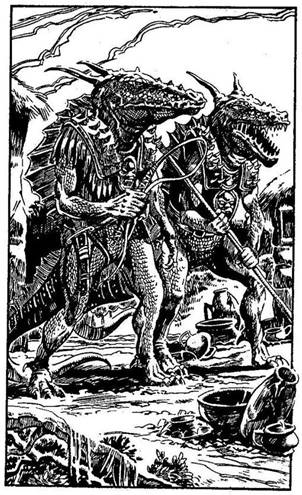
3 Életerő pontot. A sokkhatástól összecsuklasz. Dobj két kockával. Ha az összeg ugyanakkora vagy kisebb, mint jelenlegi Ügyesség pontjaid száma, lapozz a 381-re. Ha a kapott összeg nagyobb, mint az Ügyesség pontjaid száma, lapozz a 118-ra.
14.
A folyó lágyan hömpölyög az alacsony hegyek között. Amint kijutsz a következő kanyarból, a bal part közelében néhány sárkunyhót látsz. A part felé veszed az irányt, de gondosan ügyelsz rá, hogy senki se vegyen észre a kunyhók lakói közül. A partra ugrasz, és a fák között kúszva megközelíted a kunyhókat. Amíg az egyik kunyhó mögött lapulsz, két magas, páncélt viselő, hüllőhöz hasonló lényt látsz, kezükben korbács és görbe kard; ők a Gyíkemberek! Ha olvastad a tubákosszelencében lévő üzenetet, lapozz a 63-ra. Ha nem olvastad, lapozz a 270-re.
15.
Szervezeted elég erős, hogy legyőzze a betegséget, és lázad nemsokára elmúlik. Eloldod tutajodat, és elindulsz a folyón fölfelé. Lapozz a 379-re.
16.
Leveszed a hátizsákodat, és ledobod a fa üregébe. Gyorsan bemászol, és vérezve, kimerülten nyúlsz el a földön. Meg sem moccansz. 1 Életerő pontot vesztesz. A következő pillanatban meghallod a melletted elfutó Fejvadászok dübörgő lépteit. Tedd próbára a Szerencsédet! Ha Szerencséd van, lapozz 380-ra. Ha nincs Szerencséd, lapozz a 313-ra.
17.
Lefelé indulsz a dombról és balra fordulsz, a tűzhányó irányába. Lapozz a 303-ra.
18.
A dió és a szamóca kitűnő. A pigmeusok tudják, mi a finom eledel a dzsungelban. Nyertél 2 Ügyesség pontot. Az egyik hirtelen élesen felordít, erre valamennyien eltűnnek a buja bozótban. Megkönnyebbülten sóhajtasz fel, és folytatod utadat nyugat felé. Lapozz a 7-re.
19.
A vágatnak ez a része olyan, mintha rég nem használták volna. A mennyezetet tartó gerendák megrepedeztek, és úgy látod, életveszélyesek. Egy függőlegesen lefelé haladó tárna széléhez érsz, mely mögött nem sokkal véget ér a vágat. Nincs létra, amelyen lemászhatnál. Ha vörös bőrcsizma van a lábadon, lapozz a 392-re. Ha nincs ilyen csizmád, lapozz a 246-ra.
20.
Csizmáddal széttaposod a másik tojást, mielőtt elindulnál felfelé a tűzhányó oldalában, mert a kénmedencén nem tudsz keresztülmenni. Lapozz a 178-ra.
21.
Visszadugod kardodat a hüvelyébe, és lesétálsz a tópartra. Ha még most is inni akarsz a vízből, lapozz a 92-re. Ha inkább továbbmész nyugatnak, lapozz a 222-re.
22.
A Gyíkkirály úgy megijed, hogy eldobja a lángpallosát. Odaugrasz és felkapod, hogy saját pusztító fegyverével támadj rá. Nyertél 2 Ügyesség pontot. A Király képtelen védekezni, de a Goncsong végül is arra kényszeríti, hogy harcoljon.
Gyíkkirály Ügyesség 10 Életerő 15
Ha legyőzöd, lapozz a 153-ra.
23.
Felkapod a Gyíkember vízzel teli vödrét, hogy elvidd a szomjazó raboknak. A vágatban addig mész, míg az kamrává nem szélesedik. Lapozz a 223-ra.
24.
Egykettőre az aranysárga homokparton teremsz. Néhány szikla áll ki a tengerből, és a part végében egy kis fehér kőházikót pillantasz meg. Elhagyatottnak látszik. A teteje beszakadt, a ház roskadozik. A homokban cikcakkban egymást keresztező hosszú nyomokat fedezel fel. Ha a part mentén el akarsz menni a házhoz, lapozz a 221-re. Ha inkább visszamászol a sziklákon az öbölbe, és azon át a parton keresztül a másik öbölbe - lapozz a 33-ra.
25.
Három újabb Grannitusz rohamoz meg, hogy a lábadba mélyessze a fogát. Át tudod ugrani őket, de az elsőt már nem tudod lerázni - fogával a lábszáradba csimpaszkodik. Rácsapsz a kardoddal.
Grannitusz Ügyesség 4 Életerő 3
Ha legyőzöd, lapozz a 85-re.
26.
Kinyitod a zsákot, de az üres; koromfekete belül. Úgy döntesz, hogy egy követ dobsz bele, aztán meglátod, mi történik. A kő eltűnik a zsákban, és az egyáltalán nem lesz nehezebb tőle. A Feneketlen Zsákot tartod a kezedben. Nyertél 1 Szerencse
pontot! A zsák birtokában nagy, nehéz tárgyakat is magaddal vihetsz majd anélkül, hogy súlyukat megéreznéd. Ezek a tárgyak egy másik dimenzióba kerülnek át, így súlytalanná válnak, de bármikor elővehetők. Ha még nem tetted volna:
Megihatod a fiola tartalmát Lapozz a 311-re.
Felpróbálhatod a csizmát Lapozz a 94-re.
Felhúzhatod a gyűrűt az ujjadra Lapozz a 297-re.
Ha a fent említett dolgok egyikéhez sincs kedved, folytathatod utadat nyugat felé, a tisztáson át. Lapozz a 222-re.
27.
Közeledik az este, a nap fokozatosan lenyugszik a láthatáron. Olyan, mintha egy nagy vörös léggömb tűnne el a szemed elől a tűzhányó tövében. Rózsaszín és vörös napsugarak jelennek meg az égbolton, és hamarosan ezer és ezer apró rovar hangjától lesz zajos a környék. Úgy döntesz, hogy két bokor között letáborozol, s abban reménykedsz, hogy kellőképpen rejtve leszel itt az esetleges éjszakai ragadozók elől. Tedd próbára a Szerencsédet! Ha Szerencséd van, lapozz a 388-ra. Ha nincs Szerencséd, lapozz a 348-ra.
28.
A vágat egyszer csak elágazik. Ha balra indulsz, lapozz a 226-ra. Ha egyenesen előre folytatod ez utadat, lapozz a 101-re.
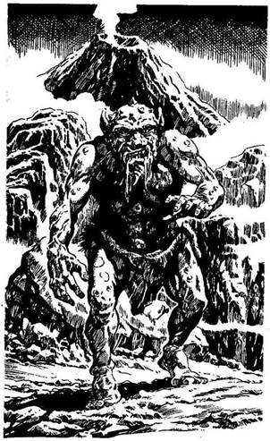
29.
Amint a Hidra a közeledbe ér, a kardodért nyúlsz, hogy felkészülj a csatára.
Hidra (jobb feje) Ügyesség 9 Életerő 9
Hidra (bal feje) Ügyesség 9 Életerő 9
Mindkét feje külön-külön támad rád mindegyik Fordulóban, de neked kell eldöntened, melyikkel mikor küzdesz meg. Ha eldöntötted, hogy melyik feje ellen fogsz kardot először, úgy járj el, mint ahogy egy egyszerű csatában tennéd. A másik feje ellen viszont kockadobással kell megállapítanod Támadóerődet (a szokásos módon), de még akkor sem sebesíted meg őt, ha a te Támadóerőd a nagyobb; úgy kell tekintened, mint ha kivédted volna a támadást. Természetesen, ha az ő Támadóereje a nagyobb, megsebzett. Ha te győzöl, lapozz a 389-re.
30.
Madártollat keresve mész a tűzhányó felé, amikor egy hatalmas teremtmény ugrik eléd a sziklák mögül. Groteszk testét bibircsókok borítják és hosszú álláról nyál csorog. Egy Hegyi Troll támadott meg!
Hegyi Troll Ügyesség 9 Életerő 9
Hacsak nincs a fejeden Sog sisakja, elveszted az első Fordulót. Ha győzöl, lapozz a 65-re.
31.
Felkapod a rudat, és ellököd a tutajt a Krokodil úszó tetemétől. Ha nincs a birtokodban a Feneketlen Zsák, amelybe beletehetted őket, dárdád és
baltád (ha egyáltalán van ilyen harci eszközöd) a tutajról beleesik a vízbe, miközben a Krokodillal viaskodsz. Káromkodsz a veszteség miatt, de tovább hajózol a folyón fölfelé. Lapozz a 390-re.
32.
Mire megtalálod és kiszabadítod az összes foglyot, hatvanhárom bosszúra elszánt hű követőd vezére vagy. Lapozz a 201-re.
33.
Hamarosan eléred a tengerpartot, de amint meglátod, mi történik ott, gyorsan visszaugrasz a sziklák mögé. Hat Kalózt láttok egy evezős csónak körül, amelyet valószínűleg ők húztak partra. Ránézel Mungóra, és megbeszélitek, mit tegyetek. Ha meg akarjátok támadni a Kalózokat, lapozz a 340-re. Ha inkább visszamentek az öbölbe, majd onnan a tengerparton át a másik kis öbölbe, lapozz a 24-re.
34.
Tovább kúszol lefelé a vágatban, de csakhamar rájössz, hogy az nem vezet sehová. Alig van hely, hogy megfordulj, így aztán fejedet két lábad közé dugva hátrabukfencezel. Visszamászol a fúrólyukon, ahonnan szabadon eléred a fővágatot. Amikor
azonban a fúrólyukban hátrabukfenceztél, valami kiesett a hátizsákodból, tehát húzz ki valamit a Felszerelési Tárgyidból is. 1 Szerencse pontot vesztesz. Kimászol a fúrólyukból, és balra fordulsz a vágatban. Lapozz a 321-re.
35.
A sziklába vésve ez olvasható: "Fordulj vissza, vagy meghalsz!" Ez komoly figyelmeztetés, de nem tudod, hogy azoknak szól-e, akik belépnek a szurdokba, vagy azoknak, akik kifelé igyekeznek onnan, ugyanis a szikla mindkét iránnyal pontosan szemben áll. Bár nem akarod az életedet kockáztatni, mégis megragadod a kardod markolatát, és lelopakodsz a szurdokba. Lapozz a 119-re.
36.
A Gyíkkirály egyre jobban közeledik feléd. Tűzpallossal a kezedben harcolsz-e ellene? Ha igen, lapozz a 111-re. Ha egy közönséges karddal kell megvívnod a Gyíkkirállyal, lapozz a 346-ra.
37.
Habár arra számítasz, hogy valamilyen szörnyű vadállat bukkan fel a vízből, körülötted mégis minden nyugodt. A lábad alatt fokozatosan szilárdulni kezd a talaj, és csakhamar kiérsz a vízből. Sűrű iszapban haladsz. Figyelmesen szemléled a terepet meg az eget, de valahogy nem érzékeled azokat az undorító puha testeket, melyek a lábadhoz tapadnak. Csak amikor valami furcsát érzel, akkor nézel le, és látod, hogy Óriás Piócák tekeredtek a lábadra. Dobj az egyik kockával, és adj 1-et a dobott számhoz. Ennyi Óriás Pióca tapadt a
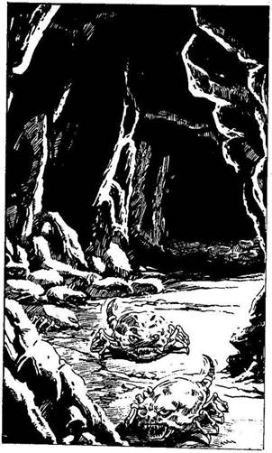
lábadhoz. Mindegyik után 1 Életerő pontot veszítesz, és egy adag Élelmiszert is. Sóra van szükséged ahhoz, hogy a piócákat eltávolítsd a lábadról. Ha még mindig életben vagy, lapozz a 280-ra.
38.
Úgy látszik, a Gyíkember süket, mert nem hallotta meg leejtett kardod csörrenését, és továbbmegy a vágatban. Felkapod a kardodat, és utána lopakodsz. Lapozz az 51-re.

39.
A vágat aljában kókusz nagyságú szikladarabok hevernek. A felületük meglepően sima. Némelyik mintha mozogna kissé, de te arra gyanakszol, hogy ez nem más, mint a fény és az árnyék játéka. Ekkor aztán az egyik szikladarab életre kel, és parányi lábain feléd iramodik. Hasító fájdalmat érzel lábadban, mintha éles fogak vájtak volna a húsodba. 1 Életerő pontot veszítesz. Rémülten veszed észre, hogy Grannituszok, tatuhoz hasonló gonosz emberevő állatok vettek körül. Ha megmart a Csörgőkígyó, lapozz a 207-re. Ha nem, lapozz a 25-re.
40.
Az árnyas szurdokban haladsz lefelé. A déli oldalon emelkedő hegyek elfogják a nap fényét. A szurdok egyszerre szürkülni kezd. Föntről hatalmas morajlást hallani. Sziklaomlás van! Óriási szikladarabok és kövek zuhannak rád. Tedd próbára a Szerencsédet! Ha Szerencséd van, lapozz a 253-ra. Ha nincs Szerencséd, lapozz a 107-re.
41.
A tubákosszelencében kicsiny aranyrögöt találsz, meg egy szelet papírt, melyre faszénnel a következőket írták: "Ha a kezedbe kerül ez az írás, az azt jelenti, hogy nem sikerült megszabadulnom a Gyíkkirály rabszolgabányájából. Tutajom a szurdok mögött van elrejtve, a folyóparton. Ha azért jöttél a szigetre, hogy segíts nekünk, kérlek, hajózz fölfelé a folyón egészen addig, míg meg nem pillantod sárkunyhóinkat. A rabszolgabányák közel vannak, de óvakodj a Gyíkember őreitől."
Összehajtogatod a kis cédulát, és az aranyröggel együtt zsebre vágod. Folytatod utadat a lábnyomokat követve. Lapozz a 325-re.
42.
Magasba emelt kardoddal rátámadsz a hozzád legközelebb álló ellenfélre, egy Hobgoblinra.
Hobgoblin Ügyesség 6 Életerő 5
Ha legyőzöd, lapozz a 341-re.

43.
A Gyíkemberek észrevesznek és gyorsan reagálnak. Mindkettőjükkel egyszerre kell megküzdened.
Első Gyíkember Ügyesség 9 Életerő 8
Második Gyíkember Ügyesség 8 Életerő 8
A csata során a két Gyíkember külön-külön támad rád minden egyes Fordulóban, de neked kell eldöntened, hogy kettőjük közül melyikkel küzdesz meg először. A kiválasztott Gyíkemberrel a szokásos módon küzdj meg. Amikor viszont a másikkal csapsz össze, dobnod kell, hogy megállapítsd a Támadóerődet. De még ha a te Támadóerőd is a nagyobb, akkor sem sebesíted meg ellenfeledet - csupán kivéded a támadását. Természetesen ha az ő Támadóereje a nagyobb, a szokásos módon megsebesít téged. Amint az egyik Gyíkembert
sikerül megölnöd, a másikat pedig kétszer megsebesítened, lapozz a 284-re.
44.
Hamarosan egy újabb elágazáshoz érsz. Amint balra tekintesz, a vágat végében megpillantod a napfényt, és eszedbe jut, hogy ott van a bejárat. Úgy döntesz, hogy egyenesen odamész. Lapozz a 274-re.
45.
Kardod lepattan a Gyíkember páncélzatáról. Az szembefordul veled, aki orvul meg akartad gyilkolni, és görbe kardjával rád támad.
Kétfejű Gyíkember Ügyesség 9 Életerő 9
Ha legyőzöd, lapozz a 173-ra.

46.
Az étel láttán a férfi szeme felcsillan; leteszi a rudat, és int, hogy ülj le. Amikor bekebelezi mindazt, amit adtál neki (veszítesz 1 Élelmiszeradagot), elmondod, mi járatban vagy. Elmeséli, hogy valamikor régen tolvaj volt az anyaországban, de elfogták, és Olaf hercege büntetésként ötévi rabságra ítélte, amit a Tűz-szigeten kellett letöltenie. Miután a Gyíkemberek vették át a hatalmat a szigeten, rákényszerítették, hogy az aranybányákban dolgozzék. Egy szép napon azonban sikerült megmenekülnie, és azóta rejtőzik a dzsungelben. Úgy gondolja, már túl öreg ahhoz, hogy a tutajútra vállalkozzék, és így jusson el a szárazföldre. Egyébként is jól érzi magát itt a fa odvában. Megkérdezed tőle, vajon tud-e neked valami hasznos információval szolgálni. Azt válaszolja, hogy szívesen megteszi, ha adsz neki még egy kis ennivaló. Ha adsz neki még egy adagot Élelmiszerkészletedből, lapozz a 149-re. Ha inkább mérgesen ráförmedsz, lapozz a 69-re.

47.
Amint lefelé haladsz a fővágatban, jobbról egy elágazás mellett mész el, balról meg egy másik vágat bejáratát látod. Egy függőlegesen lefelé haladó akna széléhez érsz, melynek oldalához egy falétrát támasztottak. Lenézel az akna mélyére. Bár nem látod a fenekét, mégis úgy döntesz, hogy lemászol a létrán. Lapozz a 315-re.

48.
Amikor lehajolsz, hogy megnézed a furcsa tojásokat, az egyik eltörik. Színtelen, nyúlós folyadék buggyan ki belőle, majd egy lyuk támad a héjban. Tűhegyes fogú, hosszú állkapocs jelenik meg a nyílásban, melyet parányi, sötétzöld, szem nélküli fej követ. A vadállat beleszimatol a levegőbe, majd ösztönösen a torkodnak ugrik. Szerencsétlenségedre épp egy szörnyű fenevad fészkébe botlottál bele: a Borotvafogú arra termett, hogy más élőlényeket elpusztítson. Ha a fejeden van Sog sisakja, lapozz az 56-ra. Ha nincs, lapozz a 304-re.
49.
Visszadugod a kardodat a hüvelyébe, és folytatod megkezdett utadat nyugat felé. Fokozatosan szilárdul a talaj a lábad alatt, és nemsokára túljutsz a mocsáron. Veled szemben két hegy emelkedik, és úgy döntesz, hogy a közöttük húzódó szurdokban mész tovább. Lapozz a 362-re.
50.
Válladdal nekifeszülsz az ajtónak. Dobj mindkét kockával. Ha a kapott összeg kevesebb vagy ugyanannyi, mint Ügyesség pontjaidnak a száma, lapozz a 356-ra. Ha a dobott összeg nagyobb, mint Ügyesség pontjaidnak a száma, lapozz a 266-ra.
51.
Az énekhang és a kőhöz csapódó kalapács zaja igen erős; közel lehetsz ahhoz a helyhez, ahol a foglyok dolgoznak. Elhatározod, hogy hátba támadod a Gyíkembert. Fölemelsz egy nagy követ, és máris mögötte állsz. Az felfigyel rád - de már nem tudja elkerülni, hogy a nehéz követ a fejéhez ne
vágd. Amikor elterül a földön, kiragadod a kezéből a vödröt, remélve, hogy abban víz van, amit odaadhatsz a szomjazó foglyoknak. Addig mész a vágatban, amíg egy nagyobb terembe nem érkezel. Lapozz a 223-ra.
52.
Az Óriásdarázs fullánkjában lévő méreg bénítóan hat rád. Vesztesz 1 Ügyesség pontot. Lapozz a 141-re.
53.
Édes illat száll alá a fa lombjai közül. Teljesen elbódulsz és elálmosodsz tőle. Mivel a szemed lecsukódik, nem veszed észre, hogy a fejed felett lévő ágakról egy vastag inda kúszik lefelé. Lassan a nyakad köré tekeredik, és fojtogatni kezd. Fulladozva felébredsz, és a kardod után nyúlsz, mely a lábadnál hever. Tedd próbára a Szerencsédet! Ha Szerencséd van, lapozz a 256-ra. Ha nincs Szerencséd, lapozz a 132-re.
54.
Amikor lehajolsz, hogy átkutasd a Gyíkkirály ruháját, észreveszed, hogy a Goncsong már lábával elrugaszkodik, hogy a te fejeden landoljon. Dobj két kockával. Ha a kapott összeg ugyanannyi vagy kevesebb, mint Ügyesség pontjaidnak a száma,
lapozz a 244-re. Ha a kapott összeg nagyobb, mint Ügyesség pontjaidnak a száma, lapozz a 260-ra.
55.
Szervezeted erős, és így a kígyó mérge nem okoz nagyobb bajt. Vesztesz 2 Életerő pontot. Egy ronggyal bekötözöd a sebedet, és pihensz egy keveset. Ha a kardoddal ki akarod csalogatni a Csörgőkígyót a fészkéből, lapozz az 5-re. Ha inkább óvatosan továbbmész a szurdokban nyugat felé, lapozz a 119-re.
56.
Elfordítod a fejedet, amikor rád támad a Borotvafogú, amely így sisakod nyakvédőjén fennakad. Visszaugrik, te pedig kardot rántasz, hogy ledöfd a gonosz teremtményt.
Borotvafogú Ügyesség 6 Életerő 5
Ha legyőzöd, lapozz a 20-ra.
57.
Az elágazáshoz visszatérve fordulhatsz balra - lapozz a 361-re -, vagy folytathatod utadat egyenesen előre a vágatban - lapozz a 19-re.
58.
Térdig süppedve a nyálkás mocsárban azon igyekszel, hogy lépést tarts a fürge Mocsári Szökdécselővel. Hirtelen délnek fordul, és megint int, hogy kövessed. Ha még mindig követni akarod a Mocsári Szökdécselőt, lapozz a 235-re. Ha inkább továbbra is nyugat felé folytatod az utadat, lapozz a 37-re.
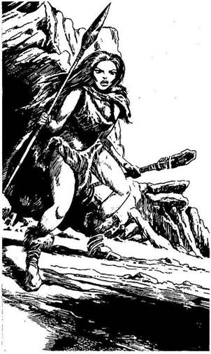
59.
Amint mászol felfelé a hegyen, belebotlasz egy rejtett zsinórba, melyet két kis szikla között feszítettek ki. A sziklák elmozdulnak, és a hegy oldalán végiggördülve figyelmeztetik a barlang lakóját a hívatlan látogató jelenlétére. Egy ádáz tekintetű Barlangi Nő jelenik meg a barlang bejáratánál. Testét állatszőrök fedik, kezében egy dárda meg egy kőbalta van. Előrelép, és feléd hajítja a dárdát. Tedd próbára a Szerencsédet! Ha Szerencséd van, lapozz a 108-ra. Ha nincs Szerencséd, lapozz a 255-re.
60.
Elhibázod mind a három fürge mozgású Grannituszt, így tehát egyenként kell megküzdened velük.
Első Grannitusz Ügyesség 4 Életerő 3
Második Grannitusz Ügyesség 3 Életerő 2
Harmadik Grannitusz Ügyesség 4 Életerő 3
Ha legyőzöd, lapozz a 192-re.
61.
Körülnézel, és látod, hogy Mungó az utolsó kalózzal, a kapitánnyal csap össze! De mielőtt a segítségére siethetnél, a kapitány hirtelen előrelendül, és átdöfi szegény Mungó mellét. Az gyötrelmesen feljajdul, majd összeesik. A kapitány feléd fordul, arcán torz mosoly ül, mely a bal orcáján végighúzódó hosszú fekete sebhelytől származik. Rátámadsz a kapitányra, hogy bosszút állj Mungón.
Kalózkapitány Ügyesség 10 Életerő 6
Ha te győzöl, lapozz a 165-re.
62.
A dárda elzúg melletted, és a Hobgoblin pánikszerűen elmenekül. Átmész a hídon, a szakadék másik oldalára. Lapozz a 139-re.
63.
Sárkunyhók és Gyíkemberek - az aranybánya valahol itt van a közelben! Ha elindulsz, hogy megkeresd a bányát, lapozz a 147-re. Ha előbb inkább elintézed a Gyíkembereket, lapozz a 329-re.

64.
Még nem tudod, de a gyűrű is hasznodra válik. Aki viseli, annak segít kiállni a próbát. A kukacok eltűnnek a szemed elől, a Sámán varázslata megtörik. Kiálltad a próbát! Ha három próbának már eleget tettél, lapozz a 214-re. Ha nem, melyiket vállalod legközelebb?
A Szerencse Lapozz a 2-re.
A Félelem Lapozz a 75-re.
A Fájdalom Lapozz a 151-re
Az Erő Lapozz a 220-ra.
Az Ügyesség próbáját? Lapozz a 335-re.
65.
Újra útnak indulsz, hogy mielőbb megtaláld a Sámánt. Ahogy mész, csomókba kötött füvet látsz, és ebből arra következtetsz, hogy akit keresel, már nem lehet messze. Kíváncsi vagy, vajon tudja-e, hogy itt jársz. Megállsz és körülnézel. Életnek semmi nyoma, csupán egy döglött sirály fekszik jobbra egy sziklán. Ha olvastad a Sámán krétaüzenetét, lapozz a 89-re. Ha nem olvastad az üzenetet, lapozz a 365-re.
66.
Felkapod a Törzsfőnök dárdáját, és visszafutsz a dzsungelba, ahonnan jöttél. Hamarosan messze kerülsz a Fejvadászok településétől. Lassítasz, már nem kell rohannod. Ismét magadra maradtál; lapozz a 113-ra.
67.
A Sámán elveszi tőled a csontokat, és fájdalmad azonnal megszűnik. A próbán azonban megbuktál, és a Sámán nem fogja elárulni neked titkát. Int, hogy indulj el délkeleti irányba, és közli veled, hogy a fogolytábor arra van, valamint azt is, hogy a Goncsonggal az ő segítsége nélkül kell megküzdened. Megfordulsz, és elindulsz lefelé a tűzhányó oldalában, a Gyíkkirály erődítményéhez. Lapozz a 168-ra.

68.
A vágat igencsak összeszűkült, a mennyezetet tartó gerendák megrepedeztek és helyenként elmozdulnak. A klausztrofóbia érzése kerít hatalmába a félhomályban, de nem adod fel, tovább mész előre, miközben föld és egy csomó apró kő hullik rád. A vágat egy újabb kereszteződésbe torkollik. Mit teszel?
Elindulsz balra? Lapozz a 278-ra.
Elindulsz jobbra? Lapozz a 70-re.
Visszafordulsz? Lapozz a 172-re.
69.
Az öreg tolvaj felpattan, és még magasabbra mászik a fán, miközben hangosan átkozódik. Nagyon fürge, így karddal a kezedben meg a hátizsákodat cipelve képtelen vagy elérni. Úgy döntesz, hogy magára hagyod, lemászol az indán, és folytatod az utadat északnyugati irányba. Lapozz a 375-re.
70.
A vágat élesen jobbra kanyarodik, majd egyenesen megy tovább, ameddig a szem ellát. Elindulsz rajta, de hirtelen morajlást hallasz a fejed fölött. A tartógerendák összetörnek, és az egész boltozat rád omlik. Vesztesz 5 Életerő pontot. Ha még mindig életben vagy, tedd próbára a Szerencsédet! Ha Szerencséd van, lapozz a 345-re. Ha nincs Szerencséd, lapozz a 175-re.
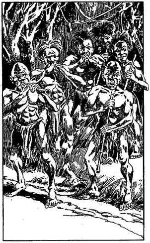
71.
Miközben nagy zajjal vágsz utat magadnak a buja növények között, nem veszed észre, hogy hat pigmeus figyel fel rád, és követni kezd. Gyűrűbe zárnak, még mielőtt megpillantanád őket, és fúvócsövükkel célba veszik testedet. Ha beszélni akarsz velük, lapozz a 276-ra. Ha inkább harcolni akarsz ellenük, lapozz a 359-re.
72.
Az írás egy kérés, mely a Sámántól származik, akit éppen keresel. Azt kéri, hogy keress egy madártollat, és tűzd a hajadba, ha békés szándék vezet hozzá. Kíváncsi vagy, vajon honnan tudja a Sámán, hogy őt keresed, de úgy döntesz, szükséged lesz arra a tollra. Elindulsz, hogy keress egyet. Lapozz a 30-ra.
73.
Habár megpróbálod ledöfni a Köpködő Varangyot, az rád ugrik, és a kardod célt téveszt. Megrémülsz, amikor a hatalmas állat a földre dönt. Hegyes foga belefúródik az egyik karodba. Tedd próbára a Szerencsédet! Ha Szerencséd van, lapozz a 217-re. Ha nincs Szerencséd, lapozz a 396-ra.
74.
A feléd tartó Gyíkember nem fog gyanút, és a Törpék csapatával nyugodtan elvonulhatsz. Lapozz a 114-re.
75.
A Sámán odalép hozzád, és ujjával megérinti a fejedet. Szörnyű, riasztó alakok jelennek meg előtted. Olyan valóságosnak hatnak, hogy szinte ordítani szeretnél fájdalmadban. Van az arcodon piros por? Ha van, lapozz a 155-re. Ha nincs, lapozz a 131-re.
76.
Az elhajított dárda a válladba fúródik, és a földre zuhansz. 3 Életerő pontot vesztesz! Ha még életben vagy, látod, hogy az ember, akit megmentettél, odalép hozzád, és kihúzza a dárdát a válladból. Felemel, odavonszol az egyik kunyhóba, hogy ott elrejtőzz, ugyanis egy másik Fejvadász éppen rád akar támadni.
A kunyhóban megmentőd egy dárdát meg egy kőbaltát vesz magához. Rád mosolyog hálája jeléül, majd hatalmas üvöltéssel kirohan a kunyhóból. Nézed, mint rohan rá a Fejvadászokra fegyvereivel csapkodva. Hármat sikerül is leütnie, amikor egy döfés végez vele. Kitámolyogsz a kunyhóból, és rátámadsz a megmaradt Fejvadászokra, de csak egyikük, a törzsfőnök veszi fel veled a harcot, a
többiek megfordulnak és elmenekülnek.
Fejvadászok
Törzsfőnöke Ügyesség 8 Életerő 8
Ha legyőzöd, lapozz a 66-ra.
77.
Az ajtó kinyílik, és megpillantod a bilincsbe vert Törpét, amint a furcsa külsejű kétfejű Gyíkember a laboratóriumba tuszkolja. Átlökdösi egy ajtón, amely a raktárba vezet. Ha előbújsz rejtekhelyedről, hogy megtámadd a mutánst (alakváltoztatót), lapozz a 289-re. Ha inkább megvárod, míg bemennek a raktárhelyiségbe, lapozz a 91-re.
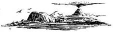
78.
Meglapulsz a fal legsötétebb zugában. A léptek egyre közelednek hozzád, amikor megpillantasz egy Gyíkembert, kezében vödörrel. Elmegy melletted, anélkül hogy észrevenne, és hangosan káromkodik, mert nehéz a vödör. Biztonságos távolságból követed a vágatban. Ha már megittad az Ügyetlenség Italát, lapozz a 154-re. Ha nem, lapozz a 184-re.
79.
Felmész a dombtetőre, és belépsz a barlangba. Rothadó élelmiszer bűze és izzadságszag terjeng a levegőben. Néhány tárgy hever szanaszét a földön, mintha szemét volna. Már épp elhagyni készülsz a barlangot, amikor egy Barlangi Nő ágya mögött egy kis zugban kicsinyke agyagtálat teszel észre. Az agyagtálban vörös por van. Mit teszel?
Rákensz belőle az arcodra? Lapozz a 332-re.
Lenyelsz belőle egy keveset? Lapozz a 97-re.
Nem nyúlsz hozzá, és kimész
a barlangból? Lapozz a 17-re.
80.
Levágsz egy fürt banánt, és lemászol a fáról. A banán édes, mint a méz. Nyersz 2 Életerő pontot. Elégedetten mászol be a búvóhelyedre, hogy meghúzd magad éjszakára. Amint felnézel az égre, gomolygó felhőket látsz az egyre sötétedő, vöröses égbolton. Leszámítva az ezernyi rovar fülsiketítő zenéjét, élvezed a hűvös estét, és hamarosan elalszol. Tedd próbára a Szerencsédet! Ha Szerencséd van, lapozz a 388-ra. Ha nincs Szerencséd, lapozz a 348-ra.
81.
Amint egyre előbbre haladsz a buja bozótban, ijedtedben feláll a hátadon a szőr, mert érzed, hogy valaki figyel. Megállsz, karddal a kézben, körülnézel, lesed, nem mozdul-e levél valahol. Ekkor három sötét bőrű férfi toppan eléd, mindegyiken csupán egyszerű ágyékkötő van. Kőbaltával és hosszú dárdával vannak felfegyverezve, de
igazából csak akkor ijedsz meg tőlük, amikor észreveszed, hogy mindháromnak az övét zsugorított emberfejek díszítik. A Fejvadászok veszekedni kezdenek, hogy melyikük öljön meg és szerezze meg ezáltal a jogot arra, hogy fejedet az övére tűzze. Végül az egyik előrelép. Küzdj meg velük egyenként.
Első Fejvadász Ügyesség 6 Életerő 6
Második Fejvadász Ügyesség 7 Életerő 6
Harmadik Fejvadász Ügyesség 6 Életerő 7
Ha legyőzöd őket, lapozz a 177-re.

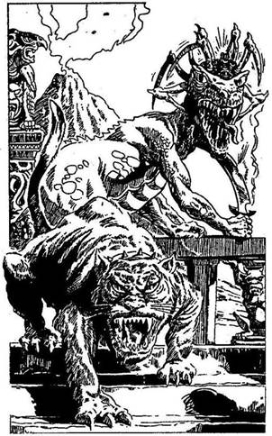
82.
Felrohansz a csigalépcsőn, s egy faajtó előtt állsz meg. Óvatosan lenyomod a kilincset, és résnyire nyitod az ajtót. Az oromzati párkány mellett, lábát szétvetve áll a gyalázatos Gyíkkirály; aki öklét rázva kiabál katonáinak. Egy furcsa Fekete Oroszlán engedelmesen ül mellette, de nem ő, hanem a Gyíkkirály feje búbján megtelepedett Goncsong látványa tölt el igazán félelemmel. Nagy levegőt veszel, és odalépsz az oromzati párkányhoz. Intesz saját harcosaidnak, és odakiáltasz a Gyíkkirálynak. Az rád se néz, csak csettint egyet a Fekete Oroszlánnak, hogy vesse rád magát.
Fekete Oroszlán Ügyesség 11 Életerő 11
Ha legyőzöd, lapozz a 203-ra.
83.
A domboldal elég meredek, és megcsúszik a lábad. Elveszíted az egyensúlyodat, és lecsúszol a hegyről. Tedd próbára a Szerencsédet! Ha Szerencséd van, lapozz a 334-re. Ha nincs Szerencséd, lapozz a 281-re.
84.
Az ajtó egy folyosóra nyílik, melyen jobbra is, balra is mehetsz. Jobbra a folyosó csakhamar véget ér, úgyhogy balra indulsz el. Egy újabb ajtót találsz a jobb oldali falban, amelyre a "Börtönőr" feliratot festették. Továbbmész. A folyosó élesen balra kanyarodik, és egy csigalépcsőbe torkollik. Ha be akarsz nyitni az ajtón, lapozz a 195-re. Ha inkább lemész a csigalépcsőn, lapozz a 8-ra.
85.
Mivel a másik három Grannitusz is feléd rohan, megpróbálod széttaposni csontpáncéljukat. Még mielőtt azok vájnák a lábadba éles fogukat. Dobj az egyik kockával. Ha 1-et vagy 2-t dobsz, lapozz a 60-ra. Ha 3-at vagy 4-et dobsz, lapozz a 239-re. Ha 5-öt vagy 6-ot dobsz, lapozz a 112-re.
86.
A Pigmeusok meglepődnek vakmerőséged láttán, és nevetésben törnek ki. Egyikük odalép hozzád, és megkínál néhány szem dióval és szamócával. Ha úgy döntesz, hogy elfogadod és megeszed az ételt, lapozz a 18-ra. Ha nem eszed meg, lapozz a 295-re.
87.
Amint a férfi közelébe érsz, az felugrik a tutajodra. Tekintete vad, a teste csupa veríték. Félrebeszél a magas láztól, úgyhogy képtelen vagy vele szót érteni. Hirtelen előhúzza a tőrét a ruhája redőiből, és rád támad. Nincs már időd, hogy a kardodat előrántsd, így puszta kézzel kell megküzdened vele.
Őrjöngő Fogoly Ügyesség 6 Életerő 5
Mindegyik Fordulóban 3 pontot le kell vonnod Támadóerődből, mivel puszta kézzel harcolsz. Amint megnyered a második Fordulót is, lapozz a 130-ra.
88.
Elhatározod, hogy tutajt építesz magadnak, és elindulsz a folyón fölfelé. A folyó elég sekély, így minden nehézség nélkül átgázolhatsz rajta; hogy a túlsó partjáról néhány kisebb fát szerezz. Ha van baltád, lapozz a 179-re. Ha nincs, lapozz a 305-re.
89.
Odamész a sirályhoz, és kihúzol egy tollat a szárnyából. Hátizsákodból egy darab spárgát veszel elő, s ezzel kötöd a tollat hátul a hajadhoz. Óvatosan, kissé szorongva mész tovább. Lapozz a 269-re.
90.
Az öreg egy összetekert drótdarabkát vesz elő a zsebéből, és átnyújtja neked. Észreveszi kíváncsi tekintetedet, és így szól: - Ez olyan drót, amit én tolvajkulcsnak használtam, hogy megszabaduljak
a bilincseimtől, mielőtt megszöktem volna a bányából. Még hasznát veheted, ha fogságba kerülsz! - Megköszönöd az öregnek az ajándékot, és az indán lekúszva tovább folytatod utadat északnyugati irányban. Lapozz a 375-re.
91.
Amint a mutáns (alakváltoztató) és a fogoly elhagyták a laboratóriumot, előmászol a lóca alól, és a nyitott ajtón át továbbmész. Lapozz a 180-ra.
92.
A víz felfrissít. Nyertél 1 Életerő pontot! Miközben iszol, egy faládikát pillantasz meg a tó fenekén. Ha alámerülsz, hogy felhozd, lapozz a 259-re. Ha inkább továbbmész nyugatnak, lapozz a 222-re.
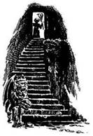
93.
Célzol, és elhajítod a tőrt. Az elröpül, és egyenesen beleáll a narancsba, amely legurul a szikláról. Kiálltad a próbát. Ha három próbán már túljutottál, lapozz a 214-re. Ha nem, úgy válassz, melyik lesz a következő.
Szerencse Lapozz a 2-re.
Félelem Lapozz a 75-re.
Fájdalom Lapozz a 151-re.
Átalakulás Lapozz a 183-ra.
Erő Lapozz a 220-ra.
94.
A csizma épp jó a lábadra. Körbefutsz benne, de semmi sem történik veled, így hát úgy döntesz, hogy inkább nem kell. Ha még nem tetted volna:
Megihatod a fiola tartalmát Lapozz a 311-re.
Kinyithatod a zsákot Lapozz a 26-ra.
Felhúzhatod a gyűrűt az ujjadra Lapozz a 297-re.
Ha egyikhez sincs kedved, folytathatod utadat nyugat felé a tisztáson át. Lapozz a 222-re.
95.
A mutáns Gyíkember leugrik a döglött Styracosaurus hátáról, és alabárdját kinyújtott kezében tartva odacsörtet hozzád.
Mutáns Gyíkember Ügyesség 9 Életerő 9
Ha legyőzöd, lapozz a 133-ra.
96.
Várod a többi pigmeus támadását, de ők egyszerűen felkapják halott társukat, és némán eltűnnek a dzsungel rengetegében. Ismét egyedül maradtál, s folytatod utadat nyugat felé. Lapozz a 7-re.
97.
A port szinte lehetetlen lenyelni. Beszippantasz egy keveset, és köhögni kezdesz. Úgy érzed, ég a tüdőd. Veszítesz 2 Életerő pontot és 1 Szerencse pontot. Végül a fájdalom megszűnik. Mit teszel? Rákensz egy kevés port az arcodra? Lapozz a 332-re. Vagy ott hagyod a port a barlangban és távozol? Lapozz a 17-re.
98.
Lassan, de biztosan fölemeled a hatalmas szikladarabot a földről. A Sámán jelt ad, hogy leteheted. Elégedett az erőddel. Kiálltad a próbát! Ha már három próbán túljutottál, lapozz a 214-re. Ha nem, úgy válassz melyik lesz a következő.
Szerencse Lapozz a 2-re.
Félelem Lapozz a 75-re.
Fájdalom Lapozz a 151-re.
Átalakulás Lapozz a 183-ra.
Ügyesség Lapozz a 335-re.
99.
Az Emberevő Óriásnál nincs semmi, aminek hasznát vennéd, így hát folytatod tutajod építését. Körülbelül egy óra múlva elegendő fatörzs gyűlik össze ahhoz, hogy egy kis tutajt eszkábálj magadnak. Indákkal kötözöd egymáshoz a fatörzseket, majd a kész tutajt vízre bocsátod. Egy hosszú, vékony bottal lökve magadat fölfelé indulsz a folyón. Lapozz a 387-re.

100.
A gyümölcs igazán finom. Nyersz 1 Életerő pontot. Felüdülve ismét útnak indulsz, miközben egyfolytában nyalogatod a szád szélét a finom gyümölcs után. Tedd próbára a Szerencsédet! Ha Szerencséd van, lapozz a 352-re. Ha nincs Szerencséd, lapozz a 160-ra.

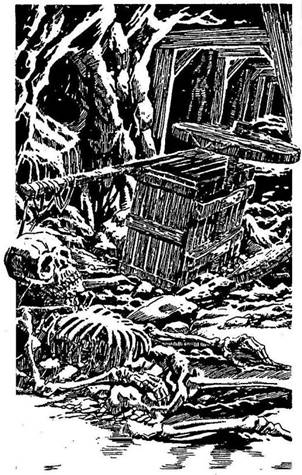
101.
Egy oldalára dőlt fakerekű kézikocsit teszel észre a vágat közepén. Teljesen elállja az utadat. Kicsiny, összetört csontváz fekszik mellette, valószínűleg egy Törpéé. A vágatból kerek fúrólyuk nyílik. Arra gondolsz, vajon nem a Sziklahernyó támadta-e meg a szegény Törpét. A vágat hosszú, nem látod a végét, de életnek semmi nyomát nem tapasztalod. Ha be akarsz mászni a fúrólyukba, lapozz a 10-re. Ha a kézikocsin átmászva folytatod az utadat a vágatban, lapozz a 321-re.
102.
Visszarohansz a buja bozótban, s közben megfeledkezel a szúrós ágakról és éles tüskékről. Észreveszed egy fa üregét, amelyben, úgy gondolod, elrejtőzhetsz. Ha megkockáztatod, hogy elbújj az üregben, lapozz a 16-ra, ha inkább továbbfutsz, lapozz a 169-re.
103.
Bár a viszketéstől majd megőrülsz, valami ennél is rosszabb történik. Elönt az izzadság, és remegni kezdesz. Kezdődő maláriád van. 3 Életerő pontot veszítesz. Ha még mindig életben vagy, ellenőrizd Életerő pontjaidat. Ha ennek összege 12 vagy több, lapozz a 15-re. Ha összege 11 vagy kevesebb, lapozz a 316-ra.
104.
Felállsz, és belenézel a hátizsákodba. Élelmiszerkészleted (ha egyáltalán még van belőle) tönkrement, ehetetlenné vált. A felszerelésed többi része viszont nem sérült meg. Nincs más választásod, mint hogy gyalog folytasd utadat. Lapozz a 197-re.
105.
Óvatosan mászol fölfelé, éberen figyelve mindenre. Félúton egy fatörzsekből összeeszkábált kis magaslest pillantasz meg, melyről egy inda lóg le. Ha fel akarsz mászni a magaslesre, lapozz a 286-ra. Ha inkább továbbmész, lapozz a 375-re.
106.
Néhány szó után észreveszed, hogy a lány nem érti, mit beszélsz. Lehet, hogy még gyermekkorában hagyták itt a Tűz-szigeten, és vadon nevelkedett az állatokkal együtt. A lány visszafogja a Tigrist, és furcsa hangokat hallatva nyugalomra inti. Az láthatóan engedelmeskedik neki, úgyhogy lassan hátrálsz, nehogy megriaszd. Mikor tisztes távolságba kerülsz tőlük, gyorsan a völgy felé indulsz, hogy megkeresd a kiszabadított foglyokat. Lapozz a 279-re.
107.
A szikladarabok esőként zúdulnak alá, s az egyik eltalál. Dobj az egyik kockával. Ha 1-et vagy 2-t dobsz, lapozz a 210-re. Ha 3-mat vagy 4-et dobsz, lapozz a 336-ra. Ha 5-öt vagy 6-ot dobsz, lapozz a 245-re.
108.
A dárda elzúg a fejed mellett, és nagyot koppanva landol az egyik sziklán. A Barlangi Nő mérgesen felmordul, és bunkósbotjával rád ront.
Barlangi Nő Ügyesség 5 Életerő 5
Ha legyőzöd, lapozz a 79-re.
109.
Ajkadat rászorítod a kürt szélére, és belefújsz, amilyen erősen csak tudsz. A csata kimenetele hirtelen megváltozik, amint bajtársaid meghallják a kürt hangját. A Gyíkkirály katonái hátrálni kezdenek, s a köztük ütött résen át eléred az erőd fakapuját. Átrohansz rajta, és beérsz a belső udvarba. Ha be akarsz menni a balra nyíló szárnyas ajtón, lapozz a 268-ra. Ha inkább a veled szemben lévő távoli ajtók egyikén mennél be, lapozz a 84-re.
110.
Nemcsak a bőröd nem bírja elviselni a gomba spóráit; a gyomrod is háborog. Iszonyatosan rosszul érzed magad, ugyanis a gomba, amit megettél, mérges volt. Veszítesz 3 Életerő és 1 Szerencse pontot. Ha még mindig életben vagy, lassan egyre jobban érzed magad, és ismét nekivágsz a dzsungelnak. Lapozz a 224-re.
111.
A Gyíkkirály dühe, amellyel rád támadt, teljesen megdöbbent. Lángpallosával egyik csapást a másik után méri rád, úgyhogy nem tudsz mást tenni, mint védekezni.
Gyíkkirály Ügyesség 12 Életerő 15
Ha te győzöl, lapozz a 153-ra.
112.
Két fürge Grannituszt ártalmatlanná tettél, de még el kell bánnod a harmadikkal.
Grannitusz Ügyesség 4 Életerő 3
Ha te győzöl, lapozz a 192-re.
113.
Lassan törsz előre a sűrű dzsungelban, s nem tudod igazán, merre is mész. Később egy pillanatra a fák között átvillan egy parányi napsugár, s ebből megállapíthatod, merre is jársz. Nyugat felé indulsz el. Lapozz a 7-re.
114.
A Törpék sietve ügetnek végig a vágatokon. A sok hónapos rabságban már jól megtanultak tájékozódni a bánya labirintusában. Egyszer csak megállnak, és egyikük odasúgja neked, hogy a következő kanyarnál dolgozik egy másik fogolycsoport. Hallod a sziklákhoz csapódó csákányok és kalapácsok tompa puffanását. A Törpéknek azt mondod, hogy menjenek tovább, és ha jelt adsz,
támadják meg az őröket. A Törpék befordulnak a kanyarba, melyből kiérve egy csapat férfit és Elfet látsz, amint a lábuknál egymáshoz láncolta a sziklafallal szemben dolgoznak. Két Ork őr ordítva utasítja őket, hogy dolgozzanak gyorsabban. Az őrök meglepődnek, amikor megpillantanak, de csak akkor veszik észre, hogy álruhában vagy, amikor egészen a közelükbe érsz. Elkiáltják magukat, és kardot rántanak. Tedd próbára a Szerencsédet! Ha Szerencséd van, lapozz a 265-re. Ha nincs Szerencséd, lapozz a 138-ra.
115.
A dárda belefúródik a malacba, és az elterül. Fát gyűjtesz, tüzet raksz, és nekilátsz megsütni a pecsenyét. Amikor ropogósra sül, leülsz a földre lakomázni. Nyersz 3 Életerő pontot! Újult erővel indulsz ismét nyugati irányba. Lapozz a 170-re.

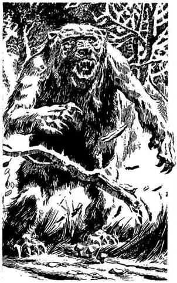
116.
Az étel nagyon ízlik, és leülsz lakmározni. Nyersz 2 Életerő pontot. Épp akkor, amikor befejeznéd a táplálkozást, a hátad mögött lévő bokrok felől zajt hallasz. Nem véletlenül akasztotta fel a fára az élelmet tulajdonosa, ugyanis meg akarta védeni a Medve elől, amely most éppen arra készül, hogy rád támadjon.
Medve Ügyesség 10 Életerő 9
Ha legyőzöd. lapozz a 247-re. Ha akarsz, két Forduló után Elmenekülhetsz. Lapozz a 27-re.

117.
Amint fölfelé mászol, az öreg rád támad, kókuszzáport zúdít a fejedre. Hiába mondod neki, hogy nem akarod bántani, egyre csak hajigálja rád mindazt, ami a keze ügyébe kerül, és azt rikácsolja, hogy: „Takarodj!" Mire felérsz a magaslesre, jó néhány púp éktelenkedik a fejeden. (Veszítesz 1 Életerő pontot.) A magasles távoli végében megpillantod az öreget, akinek a kezében egy bambusz-
bot van, és rövid vászonnadrágot visel. Mit teszel?
Felajánlasz neki valamit az
élelmiszerkészletedből? Lapozz a 46-ra.
Otthagyod, és inkább folytatod az utadat észak-
nyugat felé a dzsungelen át? Lapozz a 375-re.
Odamész hozzá, és kiragadod a kezéből
a bambuszbotot? Lapozz a 349-re.
118.
Hátrazuhansz, hiába markolásztad oly elkeseredetten a levegőt. Nagyot puffansz a földön. Azonnal visszamászol a fára, miközben kardod hegyével lepöckölöd a Mérgespókot. Lapozz a 80-ra.

119.
Lenn, a finom homokban a szurdokból kifelé tartó lábnyomokat veszel észre. Ahogy előremész, a nyomok hirtelen megszakadnak, és dulakodás jeleit látod. Az egyik pár lábnyom visszafelé vezet a szurdokba, mögötte két egyenes csík húzódik a földön, mintha valakit a földön húztak volna. Amint követed a lábnyomokat, a homokban egy fényes tárgyon akad meg a szemed. Ekkor jössz rá, hogy
egy réz tubákosszelencét találtál. Fölemeled, és látod, hogy nyitható a teteje. Ha ki akarod nyitni a tubákosszelencét, lapozz a 41-re. Ha inkább visszadobod a homokba és a lábnyomokat követve folytatod utadat, lapozz a 325-re.

120.
A „Goncsong" név hallatán a Hobgoblint félelem tölti el. Rémülten felordít, és rád szegezi a dárdáját. Tedd próbára a Szerencsédet! Ha Szerencséd van, lapozz a 62-re. Ha nincs Szerencséd, lapozz a 240-re.
121.
Az Elfek és a férfiak arcán boldog mosoly jelenik meg, amikor a második Ork is holtan terül el. A Törpék leoldják a foglyok láncait, és most már tizennégy barátod van, aki segít terved végrehajtásában. Egyikük az Osztriga-öbölből való. Bár boldog, hogy esetleg kiszabadul, elszomorítja Mungo halálának híre. Munkaeszközeikkel felfegyverezve a foglyok felkérnek, hogy légy a vezérük, és vezesd őket a Gyíkkirály kőerődítményébe, ahol a király őrei és elit gárdája védelme alatt lakik. Elfogadod az ajánlatukat, és ismét visszafordulsz a vágatokba, hogy kiszabadítsd a többi bányászfoglyot. Dobj az egyik dobókockával! Ha 1-et vagy 2-t dobsz, lapozz a 251-re. Ha 3-mat vagy 4-et dobsz, lapozz a 293-ra. Ha 5-öt vagy 6-ot dobsz, lapozz a 32-re.
122.
Letörlöd a sűrű vért kardod pengéjéről, és ismét nyugati irányba indulsz. Útközben arra gondolsz, vajon miféle teremtmény leselkedhet még rád itt a mocsárvilágban? Lapozz a 37-re.
123.
Bár a Gyíkkirály iszonyatosan fél, a Goncsong arra kényszeríti, hogy támadjon rád lángpallosával. A lángtól megriadva majmod leugrik a válladról, és eltűnik. Ekkor a Gyíkkirály, akinek félelme elszállt, dühödt kegyetlenséggel támad rád. Lapozz a 346-ra.
124.
A kígyó mérge túl erős ahhoz, hogy szervezeted legyőzze, így elájulsz. Tedd próbára a Szerencsédet! Ha Szerencséd van, lapozz a 156-ra. Ha nincs Szerencséd, lapozz a 357-re.
125.
Majdnem belehalsz a fájdalomba, amikor a Sámán odalép hozzád, és elveszi tőled a csontokat. Kiálltad a próbát! Ha eddig már három próbának eleget tettél, lapozz a 214-re. Ha nem, válassz, melyik lesz a következő.
Szerencse Lapozz a 2-re.
Félelem Lapozz a 75-re.
Átváltozás Lapozz a 183-ra.
Erő Lapozz a 220-ra.
Ügyesség Lapozz a 335-re.
126.
A hátizsákodból három adag Élelmet veszel elő, és elosztod a Pigmeusok között. Mindegyik megszagolja, mielőtt belekóstolna. Hirtelen egymásra néznek, és hangosan utálkozva kiköpik a falatot a szájukból. Az egyik jelt ad a többieknek, hogy támadjanak rád, de amint kihúzza kőbunkóját az övéből, a gyomrához kap és elvágódik. A többiek is tántorogni kezdenek; a te ételedtől lettek rosszul. Nem vesztegeted tovább az időt, és amilyen gyorsan csak tudsz, nekivágsz a dzsungelnak nyugati irányba. Lapozz a 7-re.
127.
A Hobgoblin természetesen elég buta ahhoz, hogy elhiggye: te a Gyíkkirály egyik őre vagy. Neked szegezi a dárdáját, és mély hangján a következőt kérdi: - Jelszó? - Mit válaszolsz?
"Tessék?" Lapozz a 193-ra.
"Goncsong" Lapozz a 120-ra.
"Tűz-sziget" Lapozz a 287-re.
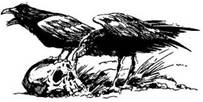
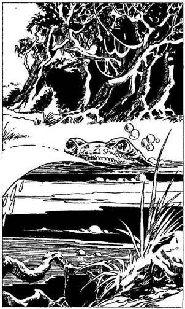
128.
A tó vize tisztának, frissnek látszik, bár kissé zavar az a zöld alga, ami a felszínén úszik. Amikor lehajolsz, hogy igyál, a tó közepe felöl hirtelen felbukkanó hatalmas zöld szájból jókora vízsugár tör elő. Dobj mindkét dobókockával. Ha a dobott szám ugyanannyi vagy kevesebb, mint Ügyesség pontjaid száma, lapozz a 248-ra. Ha a dobott szám nagyobb, mint Ügyességed, lapozz a 351-re.

129.
Elveszed a botot a varázslótól, de abban a pillanatban, amikor megérinted, tüzes vasrúddá változik. Veszítesz 2 Életerő, 1 Ügyesség és 1 Szerencse pontot, amiért oly meggondolatlanul rátámadtál a Sámánra. Eldobod a vasrudat, és még mindig nem akarod elhinni, hogy mi történt. Ha beszélni akarsz a Sámánnal, lapozz a 324-re. Ha inkább megtámadod a kardoddal, lapozz a 157-re.
130.
Egy jól irányzott balhoroggal leteríted a férfit, majd belököd a folyóba. Ordít, de nem próbál meg visszamászni a tutajodra. Lelkiismeret-furdalásod van, amiért magára hagyod, de tovább kell menned, hogy teljesítsd küldetésedet. Lapozz a 14-re.
131.
Nem vagy ura az akaratodnak, és üvölteni kezdesz. Megbuktál a próbán! A Sámán ezek után nem árulja el neked a titkát. A gonosz, úgy látszik, eltűnik, és a Sámán délkeleti irányba mutat, mondván, hogy arra van a fogolytábor, továbbá közli, hogy a Goncsongot egyedül, az ő segítsége nélkül kell legyőznöd. Megfordulsz és elindulsz lefelé a tűzhányó oldalában, hogy megtaláld a Gyíkkirály erődítményét. Lapozz a 168-ra.
132.
Kinyújtod a kezedet, amennyire csak tudod, de képtelen vagy elérni a kardodat. Az inda egyre szorosabban tekeredik a nyakad köré, és rövidesen elveszted az eszméletedet. A húsevő fa zsákmánya lettél.
133.
A mutáns pajzsát magadhoz veszed, mert az könnyű, de ugyanakkor erős is. Nyertél 1 Ügyesség pontot! A fogolytábor már egészen közel lehet; nem vesztegeted tovább az időt, ismét útnak indulsz. Lapozz a 218-ra.
134.
Fokozatosan visszanyered a látásodat, és kardodat visszadugod a hüvelyébe. Ha továbbra is inni akarsz a tóból, lapozz a 92-re. Ha inkább továbbmész nyugati irányba, lapozz a 222-re.
135.
Ha a kereszteződéstől folytatod az utat egyenesen előre, lapozz a 39-re; ha jobbra, lapozz a 361-re.
136.
Korbácsodat beledugod az övedbe, és eldöntöd, mit csinálj. Ha fel akarod kapni a rozsdás kést, lapozz a 275-re. Ha inkább egyenesen odamész a legtávolabbi ajtóhoz, lapozz a 312-re.
137.
Kézzel-lábbal magyarázod a Pigmeusoknak, hogy semmit nem adsz nekik. Azok mérgükben feléd hajítanak egy dárdát. Dobj az egyik kockával, így állapítsd meg, hány dárda fúródott a testedbe. Mindegyik dárda után veszítesz 1 Életerő pontot. Ha még mindig életben vagy, lapozz a 373-ra.
138.
Az egyik Ork kardjával rád támad, és meg kell küzdened vele.
Ork Őr Ügyesség 7 Életerő 7
Ha legyűröd, lapozz a 121-re. Ha akarsz, a Törpék felé hátrálva Elmenekülhetsz. Lapozz a 11-re.
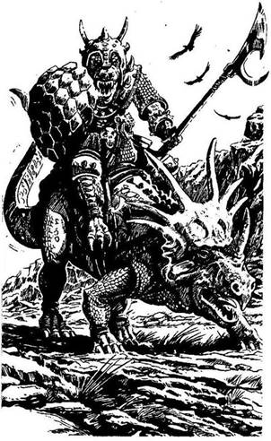
139.
Ismét elindulsz délkeleti irányba a homokon és sziklákon át. Egyszer csak egy dinosaurushoz hasonló paripa hátán lovagló, állig felfegyverzett hüllő állja el az utadat. Egy mutáns Gyíkemberrel van dolgod, aki egy Styracosaurus hátán közelít feléd. A Gyíkember ügetésbe kezd, s rád támad.
Styracosaurus Ügyesség 11 Életerő 10
Ha legyőzöd, lapozz a 95-re.
140.
A földre zuhansz, de nem sérülsz meg. Felállsz, de nem jutsz messzire, mert a vágat csakhamar véget ér. Nincs más választásod, vissza kell térned az előző elágazáshoz. Lapozz a 378-ra.
141.
Ismét útnak indulsz, hogy megkeresd a Sámánt. Lapozz a 399-re.

142.
Futás közben hátranézel, hogy megtudd, követ-e a lány a Tigrissel. Szerencsére sehol nem látod őket. Lassítasz, és leballagsz a szurdokba, hogy csatlakozz a felszabadult foglyokhoz. Lapozz a 279-re.
143.
Letépsz néhány levelet a tölcsér alakú növényről, és dühösen megdörzsölöd vele feldagadt arcodat. Azonnal megkönnyebbülsz, a viszketés szerencsére elmúlik. Ha még mindig meg akarod enni a gombát, lapozz a 110-re. Ha inkább továbbmész a dzsungelban, lapozz a 224-re.
144.
Kardod átdöfi a Gyíkember szívét, aki azonnal kimúlik. Lapozz a 173-ra.
145.
Lassan bedugod a kezedet a lyukon, és megdermedsz a félelemtől, amikor meghallod az ismerős csörgő hangot. Megpróbálod kihúzni a kezedet, még mielőtt a Csörgőkígyó méregfoga belevájna a karodba, de az fürgébb, mint te: mérge a véredbe kerül. Amilyen gyorsan csak tudod, kardoddal felvágod a sebedet, hogy jól kivérezzen. Ha Életerő pontjaidnak száma 18 vagy ennél kevesebb, lapozz a 264-re. Ha több mint 18, lapozz az 55-re.
146.
A bokor tüskéi mérgezőek. 3 Életerő pontot vesztesz! Ha még életben vagy, továbbvonszolod magad a fogolytábor irányába. Lapozz a 291-re.
147.
A kunyhók mögött ösvény vezet a fák között egy magas hegy sziklás falához. A sziklafal közepén nyílik a bánya négyszögletes bejárata. Sok lábnyom vezet be- és kifelé. Óvatosan belépsz a bányába, s a falhoz lapulva haladsz. A vágatot fáklyák világítják meg, hátborzongató árnyakat vetítve a falakra. Érzed, hogy az út lejt, és hamarosan egy elágazáshoz érsz. Ha balra mész, lapozz a 274-re. Ha jobbra indulsz, lapozz a 28-ra.
148.
Búvóhelyedtől nem messze néhány banánfát találsz. A gyümölcsöt a földről nem éred el, ezért fel kell másznod a fára. Tedd próbára a Szerencsédet! Ha Szerencséd van, lapozz a 80-ra. Ha nincs Szerencséd, lapozz a 13-ra.


149.
Az öregember elveszi az ételt, és szénnel lerajzolja a sziget térképét egy darab rongyra. Megjelöli rajta azt a helyet, ahol most vagy, és azt is, hogy hol található a bánya meg a fogolytábor, ahol a Gyíkkirály él. Összehajtogatod a térképet, és a hátizsákodba teszed. Már épp le akarsz ereszkedni az indán, amikor az öreg így szól: - Még egy kis ételért cserébe adok neked valami igazán hasznosat! - Ha adsz neki még egy adagot az Élelmiszerkészletedből, lapozz a 90-re. Ha inkább lemászol és folytatod az utadat északnyugati irányba, lapozz a 375-re.

150.
Valahogy sikerül megmenekülnöd a dühöngő zuhatag elől, és kifulladva terülsz el a jobb parton. Miközben kimerülten fekszel a mocsárban, a Víziszörny dühe elcsitul mögötted. Tedd próbára a Szerencsédet! Ha szerencséd van, lapozz a 104-re. Ha nincs szerencséd, lapozz a 159-re.
151.
A Sámán átnyújtja neked a két csontot, és megkér, hogy fogj egyet-egyet a jobb és bal kezedbe. Izmaid megfeszülnek, és úgy érzed, belülről majd szétfeszít valami, mindjárt szétrobbansz, és iszonyatos fájdalom kínoz. Ha könyörögni kezdesz a Sámánnak, hogy szabadítson meg a fájdalomtól, lapozz
a 67-re. Ha inkább összeszorított foggal tűröd a fájdalmat, lapozz a 125-re.
152.
A ház mögött keskeny kis ösvény vezet fel a sziklához. Elindulsz felfelé, s mire felérsz, jól kifulladsz. Nagyot húzol a kulacsodból, és megállapítod, hogy nemsokára fogytán lesz az ivóvized. Nyugat felé nézel, és a fák mögött, ijesztően közel, az alvó tűzhányót pillantod meg. Életnek semmi jelét nem tapasztalod - tisztán hallod a madarak csivitelését és a bogarak zümmögését. A rohamosan leereszkedő szürkületben úgy döntesz, letáborozol éjszakára az egyik szikla tövében. Nem alszol valami jól, s a nap első sugarainak fényére azonnal felébredsz. Máris útnak indulsz. Elhatározod, hogy egyenesen nyugati irányba mész, a fák felé. Lapozz a 391-re.
153.
Utolsó, végzetes csapásod a földre kényszeríti a Gyíkkirályt. Mit teszel?
Megfordulsz és köszöntöd a
seregedet? Lapozz a 188-ra.
Levágod a Goncsong fullánkját? Lapozz a 384-re.
Átkutatod a Gyíkkirály ruháját? Lapozz az 54-re.
154.
Megbotlasz egy kőben. Miközben megpróbálsz egyensúlyozni, hogy fel ne bukj, elejted a kardodat. Tedd próbára a Szerencsédet! Ha Szerencséd van, lapozz a 38-ra. Ha nincs Szerencséd, lapozz a 319-re.
155.
A vörös por mágikus ereje segít, hogy ura légy önmagadnak. Lassan-lassan túljutsz a borzalmakon. Kiálltad a próbát! Ha eddig már három próbán sikeresen túljutottál, lapozz a 214-re. Ha még nem, melyiket választod?
Szerencse Lapozz a 2-re.
Fájdalom Lapozz a 151-re.
Átváltozás Lapozz a 183-ra.
Erő Lapozz a 220-ra.
Ügyesség Lapozz a 335-re.
156.
Bár már közel jártál a halálhoz, mégis sikerült legyőznöd a kígyó mérgét. A méreg azonban igencsak legyengített. Végül is visszanyered az eszméletedet és kipihened magad, de veszítesz 5 Ügyesség és 4 Életerő pontot. Ha ki akarod piszkálni a Csörgőkígyót a kardoddal, lapozz az 5-re. Ha inkább óvatosan leereszkedsz a szurdokba és egyenesen nyugati irányba mész, lapozz a 119-re.
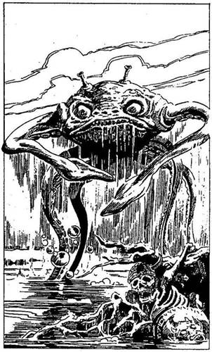
157.
Végzetes tévedés volt, hogy megtámadtad a hatalmas varázslót. Egy kicsiny dal, mely ajkáról száll föl, kardodat tekergő kígyóvá változtatja. A kígyó a karodra csavarodik. Felordítasz fájdalmadban, és megpróbálod lerázni az állatot. Igyekezeted azonban hiábavalónak bizonyul, mert a kígyó mérge szinte azonnal végez veled.

158.
Egyre puhább és puhább lesz a talaj a lábad alatt, mígnem egyszer csak térdig süppedsz a fekete mocsárban. Csak nehezen tudsz lépkedni, és egyre jobban aggódsz: az egész területet víz borítja, csupán itt-ott látni egy kicsinyke nádast. De azért elszántan mész tovább, mígnem közvetlenül előtted egy tapogató kar nyúlik ki a fekete vízből, aztán egy másik követi, majd lassan egy rémes, poliphoz hasonló, rücskös bőrű, sötétzöld színű vadállat emelkedik ki hat lábán a vízből. Ez nem más, mint az undorító Iszapszívó, mellyel meg kell küzdened! Ha van dárdád, lapozz a 394-re. Ha nincs, karddal kell megvívnod vele.
Iszapszívó Ügyesség 10 Életerő 9
Minden egyes Fordulóban 2-vel csökken Támadóerőd, mert fáradt vagy és csak nehezen mozogsz a mocsárban. Ha te győzöl, lapozz a 122-re.
159.
Túlságosan is arra koncentráltál, hogy ne fulladj bele a habokba, így nem vetted észre, hogy a vízsugár letépte a hátadról a hátizsákodat. Minden Élelmed és Felszerelésed elúszott. Veszítesz 2 Szerencse pontot. Hüvelyében pihenő kardod viszont szerencsédre megmaradt. Nincs más választásod, gyalog kell folytatnod az utat. Lapozz a 197-re.
160.
Dongást hallasz a fejed fölött, és egy Óriásdarazsat pillantasz meg, amint épp lecsapni készül rád, mivel a gyümölcs édes illata odacsalta. Az utolsó pillanatban rántod elő a kardodat, hogy megvédd magad.
Óriásdarázs Ügyesség 6 Életerő 6
Ha mindegyik Fordulóban te győzöl, lapozz a 141-re. Ha te győzöl ugyan, de a csata során akár egy Fordulót is elvesztettél, lapozz az 52-re.
161.
Felöltöd a Gyíkember páncélját, hogy álcázd magad, a Törpéket pedig libasorba állítod, hagy azt a látszatot keltsék, mintha össze lennének láncolva. Mosolyogva csapkodsz a levegőbe a korbáccsal, és hajtod a Törpéket a vágaton lefelé. Követed őket a végeláthatatlan alagutakban, egyre lejjebb, a bánya mélyébe. Ahogy elhaladsz egy másik vágatrendszer mellett, egy Gyíkembert pillantasz meg, amint feléd tart. Tedd próbára a Szerencsédet! Ha Szerencséd van, lapozz a 74-re. Ha nincs Szerencséd, lapozz a 262-re.
162.
Hiába rángatod a kilincset, az ajtó nem nyílik. Ha be akarod törni, lapozz az 50-re. Ha inkább visszamész az erődítmény udvarára és más ajtókkal próbálkozol, lapozz a 84-re.
163.
A Gyíkemberek észrevesznek, és gyorsan reagálnak. Mindkettőjükkel egyszerre kell megküzdened.
Első Gyíkember Ügyesség 9 Életerő 8
Második Gyíkember Ügyesség 8 Életerő 8
A csata sarán minden egyes Fordulóban mindkét Gyíkember külön-külön támad rád, de neked kell eldöntened, hogy kettőjük közül melyikkel csatázol először. A kiválasztott Gyíkemberrel a szokásos módon küzdj meg. Viszont amikor a másikkal csapsz össze, dobnod kell, hogy megállapítsd a Támadóerődet. Ám akkor sem sebesíted meg az ellenfeledet, ha a te Támadóerőd nagyobb - csupán kivéded a támadását. Természetesen ha az ő Támadóereje a nagyobb, a szokásos módon megsebesít téged. Ha te győzöl, lapozz a 368-ra.
164.
A Goblin mélyen alszik, és nem ébred fel. Szép csöndben elhagyod a szobát, és magaddal viszed a mellvértjét. A folyosón magadra öltöd - épp hogy beleférsz. Nyersz 1 Ügyesség pontot. Becsukod a Goblin ajtaját és elindulsz a csigalépcső felé. Lapozz a 8-ra.

165.
Mungo körül a homok vörös a vértől. Letérdelsz mellé, és óvatosan a karodba emeled a fejét. Kissé kinyitja a szemét. Bár haldoklik, halványan elmosolyodik. Suttogva így szól: - Hát elfogtuk őket, de mi hasznom belőle? Fogadd meg, hogy elkapod a Gyíkkirályt! Ugye megfogadod? - Ekkor lecsukódik a szeme, és holtan esik össze. A parton, a szikla tövében temeted el, és sírját a homokba szúrt kardjával jelölöd meg. Keskeny kis ösvényt veszel észre, amely a szikla oldalában visz fel a csúcsra, majd visszanézel, és megpillantod a ládát a parton. Ha úgy döntesz, hogy felmész az ösvényen, lapozz a 200-ra. Ha inkább kinyitod a ládát, lapozz a 398-ra.
166.
Amint belépsz a cellába, csodálkozva tapasztalod, hogy az öregember meg se szólal. Ha az ujjadon van a varázsgyűrű, lapozz a 294-re. Ha nincs, lapozz a 318-ra.

167.
Kardoddal hadonászva rohansz a disznó után, de az igencsak fürge. Átrohan a tisztáson, és hamarosan eltűnik a szemed elől. Lassítasz, és nyugati irányba haladva még mindig arra gondolsz, hogy milyen fenséges disznóvacsoráról kell lemondanod. Lapozz a 170-re.

168.
Gyorsan haladsz délkelet felé, abban a reményben, hogy foglyokkal találkozol: a kiszabadított foglyokkal. Hamarosan egy szakadék széléhez érsz, amely túl széles ahhoz, hogy átugord. Kelet felé veszed az utadat, s dühöngsz, amiért időt veszítesz. Egy kőhidat látsz magad előtt, mely összeköti a szakadék két peremét, de egy felfegyverzett Hobgoblin áll őrt mellette. Mit teszel?
Megpróbálsz valamilyen csellel átjutni
a kőhídon? Lapozz a 127-re.
Felajánlasz a Hobgoblinnak egy aranyrögöt
(ha van ilyen a birtokodban), hogy
átengedjen? Lapozz a 252-re.
Megtámadod a kardoddal? Lapozz a 328-ra.
169.
A Fejvadászok sokkal otthonosabban mozognak a dzsungelban, mint te, és csakhamar utolérnek. Szembefordulsz és megküzdesz velük. Szerencsére a bozótban túl keskeny az ösvény ahhoz, hogy egyszerre egynél több Fejvadásszal kelljen összecsapnod.
Első Fejvadász Ügyesség 7 Életerő 5
Második Fejvadász Ügyesség 6 Életerő 6
Harmadik Fejvadász Ügyesség 6 Életerő 7
Küzdj meg velük egyenként, és ha legyőzöd őket, lapozz a 261-re.
170.
A távolban egy hegy magaslik, és mögötte északnyugatra megpillantod az alvó tűzhányó ijesztő körvonalait. Kisvártatva eléred a délkeleti irányba hömpölygő folyó bozótos partját. A túlpart elég meredek és erdő borítja. Ha olvastad a tubákosszelencébe zárt üzenetet, lapozz a 288-ra. Ha nem olvastad, lapozz a 88-ra.
171.
Odakúszol a tűzhöz abban reménykedve, hogy a Fejvadászok figyelmét túlságosan is leköti rituális szertartásuk, és nem vesznek észre. Tedd próbára a Szerencsédet! Ha Szerencséd van, lapozz a 215-re. Ha nincs szerencséd, lapozz a 302-re.
172.
Hamarosan visszajutsz egy újabb elágazáshoz. Ha továbbra is egyenesen előre akarsz menni, lapozz a 383-ra. Ha jobbra akarsz fordulni, lapozz a 4-re.
173.
A Törpe kegyelemért könyörög, amint a Gyíkember a földre rogy. Ha van nálad egy tolvajkulcsként használható drótdarab, lapozz a 393-ra. Ha nincs ilyen szerszámod, lapozz a 216-ra.
174.
A pép keserű, és a szád zsibbadni kezd tőle. Verejtékezel, és úgy érzed, hogy a tested erőtől duzzad. Nyersz 2 Életerő pontot. Felkapod a kardodat, és újult erővel ismét nekivágsz az útnak nyugati irányba. Lapozz a 113-ra.
175.
Sikerül hátrálva kimásznod a kőtörmelék alól. Leporolod a ruhádat, és visszatérsz az utolsó elágazáshoz, ugyanis már nem tudsz továbbmenni, mert a vágat beomlott. Amint visszaérsz az elágazáshoz, elindulhatsz balra - lapozz a 172-re-, vagy mehetsz egyenesen - lapozz a 278-ra.
176.
A Sámán megrázza tollakkal díszített botját, mely kereplő hangot ad. Ellenségnek tart, mert nem adtad jelét baráti érzelmeidnek. Mit teszel?
Megpróbálsz beszélni vele? Lapozz a 324-re.
Megpróbálod kiütni a kezéből a tollas végű
botot? Lapozz a 129-re.
Karddal támadsz rá? Lapozz a 157-re.
177.
A Fejvadászoknak a fegyverükön kívül más felszerelésük nem volt, viszont elrejtettek egy banánnal és kókusszal teli zsákot. Úgy döntesz, hogy nem a saját Élelmiszerkészletedből fogyasztasz, hanem megeszed a Fejvadászok gyümölcsét. Nyersz 1 Életerő pontot! Kíváncsi vagy, vajon milyen közel lehet a falu, ahonnan jöttek. Felmászol egy fa tetejére, hogy jobban körülnézhess. A magasból látod, amint délnyugatra, elég közel hozzád, füst száll a magasba. Valószínűleg az ő falujuk lehet ott. Nyugatra egyre ritkulnak a fák, északnyugaton pedig a távolban megpillantod a tűzhányó félelmetes körvonalát. Lemászol a fáról, és eldöntöd, merre menj tovább. Ha délnyugat felé folytatod az utadat, lapozz a 229-re. Ha inkább északnyugati irányba mész, hogy megkerüld a füstöt, lapozz a 12-re.
178.
Egy kis magaslaton, tükörfényesre csiszolt kövek gyűrűjében, különböző tárgyak láthatók: egy karkötő, egy agyagbaba, egy vékony korsó meg egy csont, hogy csak néhányat említsünk az ott heverő dolgok közül. Ezek valószínűleg a Sámánnak szánt adományok. Ha te is szeretnél itt elhelyezni valamilyen tárgyat, lapozz a 233-ra. Ha inkább elvennél valamit a tárgyak közül, lapozz a 306-ra.
179.
Rövid idő alatt sikerül annyi fát kivágnod, amennyi egy kis tutaj elkészítéséhez elegendő. A szálfákat indákkal erősíted egymáshoz, majd vízre bocsátod a tutajt. Egy hosszú, vékony ággal kormányozva lököd előre magad, és elindulsz fölfelé a folyón. Lapozz a 387-re.

180.
A vágat élesen jobbra kanyarodik. A fordulóban egy csigalépcsőhöz érsz, amely a toronyba vezet. Valami azt súgja, hogy menj fel a lépcsőn. Lapozz a 82-re.
181.
Kevés reményed van rá, de mégis megpróbálod, hogy varázszsákoddal foglyul ejtsd a Víziszörnyet. Kinyitod a zsák száját, amilyen nagyra csak tudod, és várod, hogy a Víziszörny lecsapjon rád. Tedd próbára a Szerencsédet! Ha Szerencséd van, lapozz a 230-ra. Ha nincs Szerencséd, lapozz a 257-re.
182.
Kivont karddal rárontasz az Óriásrákra. Az kiereszti szorításából Mungót, hogy így mindkét ollójával rád támadjon.
Óriásrák Ügyesség 10 Életerő 11
Ha legyőzöd, lapozz a 366-ra.
183.
A Sámán rád csap a botjával, ettől testedet kukacok lepik el. A szádban és a füledben nyüzsögnek. Ha az ujjadon van a varázsgyűrű, lapozz a 64-re. Ha nincs, lapozz a 283-ra.

184.
Megbotlasz egy kőben, de nem esel el és nem csapsz zajt. Nyersz 1 Szerencse pontot. Megkönnyebbülten felsóhajtasz, és követed a Gyíkembert. Lapozz az 51-re.

185.
Magasba emelt kardoddal ráveted magad a hozzád legközelebb álló ellenfélre, egy mutáns Gyíkemberre.
Mutáns Gyíkember Ügyesség 9 Életerő 8
Ha legyőzöd, lapozz a 341-re!
186.
Amikor előveszed a hátizsákodat, már szinte haldokolsz az éhségtől. Befalsz egy adagot az Élelmiszerkészletedből, és bemászol a rejtekhelyedre. Az égen, ahogy leszáll az este, fenyegető bíborvörös és mályvaszínű felhők gyülekeznek. Bár ezernyi rovar fülsiketítő hangon zajong körülötted a kellemes, hűvös éjszakában, te mégis gyorsan elalszol. Tedd próbára a Szerencsédet! Ha Szerencséd van, lapozz a 388-ra. Ha nincs Szerencséd, lapozz a 348-ta.
187.
A zsákban csupán néhány összegöngyölt széles levél van. Amint összenyomod őket, úgy érzed, mintha a belsejükben valamilyen pép vagy sűrű massza lenne. Kitekergeted a leveleket, és világoszöld masszát találsz bennük. Mit teszel?
A masszából rákensz egy keveset a
sebeidre? Lapozz a 377-re.
Eszel egy keveset a masszából? Lapozz a 174-re.
Nem nyúlsz a masszához, hanem
továbbmész nyugati irányba? Lapozz a 113-ra.
188.
Nagy könnyelműséget követsz el azzal, hogy hátat fordítasz a félelmetes Goncsongnak. Harcosaidnak alig van idejük rá, hogy megünnepeljék a Gyíkkirály felett aratott győzelmedet, ugyanis Goncsong, fullánkját kihúzva, átpattan a fejedre. Tűhegyes fullánkja a homlokodba fúródik, és belemélyed az agyadba. Ettől a pillanattól kezdve a Goncsong uralkodik az akaratod felett, és csupán tehetetlenül szemlélheted, amint a Gyíkkirály serege megsemmisíti demoralizált csapatodat. A csatát elvesztetted.

189.
Mielőtt az eszméletét vesztett Gyíkember magához térne, átkutatod a zsebeit. Három vaskulcsot találsz. Magadhoz veszed és zsebre vágod őket. Ezután hátrakötöd mindkét kezét, és behúzod a kunyhóba. Amint magához tér, követeled, hogy árulja el, mit tud a fogoly bányászokról? Elmondja, hogy a bánya bejárata nincs messze - vagy százméternyire van a kunyhók mögött. Kikötöd a Gyíkembert egy póznához, és elhagyod a kunyhót, hogy megkeresd a bányákat. Lapozz a 147-re.
190.
Amikor megérinted a kardod markolatát, a bennszülött lány elengedi a fenevad pórázát. A Tigris egy ugrással rád veti magát, és így elveszíted az első Fordulót. Ha még mindig életben vagy, elő tudod rántani a kardodat, hogy megvédd magad.
Kardfogú Tigris Ügyesség 11 Életerő 8
Ha legyőződ, lapozz a 343-ra.
191.
A kezed csúszik az iszaptól: nem találod el a hatalmas Iszapszívót, dárdád beleesik a vízbe. Most már a kardoddal kell legyőznöd az Iszapszívót!
Iszapszívó Ügyesség 10 Életerő 9
Ha legyőzöd, lapozz a 122-re.
192.
Úgy döntesz, hogy elindulsz a vágatban lefelé, de az csakhamar véget ér. Nincs más választásod, vissza kell menned az elágazáshoz. Lapozz az 57-re.
193.
A Hobgoblin bután rád mereszti a szemét és így szól: - Igen, helyes a válasz; a „Tessék" a jelszó. Átkelhetsz a hídon. - Félreáll az útból, te pedig gyorsan átmész a szakadék túloldalára. Lapozz a 139-re.

194.
A hegy oldalában haladsz a szurdok mentén. Amint föltekintesz a magasba, észreveszed, hogy a szurdok másik oldalán hegyomlás kezdődik: hatalmas kövek és szikladarabok zuhannak a mélybe. Bár nincs ínyedre a hegymászás, mégis megkönnyebbülsz, hogy nem vagy a szurdokban. Nyersz 1 Szerencse pontot! Ha továbbra is itt a hegy oldalában akarod folytatni az utadat, lapozz a 83-ra. Ha viszont megkockáztatod, hogy lemenj a szurdokba, lapozz a 382-re.
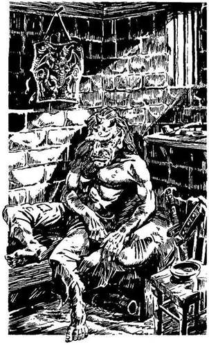
195.
Az ajtó egy koszos, nyomorúságos szobába nyílik. A kis rácsos ablakon beszűrődő napsugarak megvilágítják a szemközti falat. A szoba egyik sarkában lévő szalmamatracon egy Goblin horkol. Az ágya fölött egy szögön vas mellvért lóg. Ha be akarsz osonni a szobába, hogy ellopd a mellvértet, lapozz a 333-ra. Ha inkább becsukod az ajtót és visszamész a csigalépcsőhöz, lapozz a 8-ra.
196.
Megkerülöd az Óriásgyík hatalmas testét, és sietve továbbmész a szurdokban, amely végre szélesedni kezd, s egy füves réthez érsz. A hegyek lassan elmaradnak mögötted. Balra, nem túl messze, talán tíz méterre, egy tavat látsz, melyből madarak iszogatnak. Ha inni akarsz a tó vizéből, lapozz a 128-ra. Ha inkább tovább folytatod az utat nyugati irányba, lapozz a 222-re.
197.
Látod, amint a nap lassan lemegy nyugaton. Olyan, mintha egy nagy piros léggömb úszna a vízen. Hamarosan eltűnik, leszáll az este. Úgy döntesz, letáborozol két szikla között. A sziklákra ágakat fektetsz, és leveleket szórsz rájuk. Igencsak megéheztél a folyón átélt megpróbáltatások után, és sürgősen enni akarsz valamit. Ha van még Élelmed, lapozz a 186-ra. Ha már nincs, lapozz a 148-ra.
198.
Az elhagyatott ház telis-tele van ócska bútorral, törött cserépedénnyel és mindenféle rongyos ruhával. Elrúgod a szőnyeget, és egy fogantyút veszel észre a padlóban - csapóajtót találtál. Ha fel akarod emelni a csapóajtót, lapozz a 267-re. Ha inkább úgy döntesz, hogy elhagyod a házat, lapozz a 152-re.
199.
A Sámán figyelmesen végighallgatja, amit a Gyíkkirályról és a vele kapcsolatos tervedről elmondasz. Szeretnéd megtudni azt is, miként ölhetnéd meg a parazita Goncsongot, hogy ezáltal csökkentsd a király erejét. A Sámán nagyot ugrik a Goncsong név hallatán. Nyilvánvalóan fogalma sem volt róla, hogy akár egy is akad belőle a szigeten. Akadozó nyelvvel közli, hogy elárulja neked a varázstitkokat, de ezt ki kell érdemelned, bármily nemes is a küldetésed. A próba fájdalmas lesz és nehéz. Ha elfogadod a Sámán feltételeit, lapozz a 397-re. Ha nem akarod elsajátítani a Sámán tudományát, és anélkül akarsz a Gyíkkirállyal megküzdeni, lapozz a 237-re.
200.
Fölfelé indulsz a keskeny ösvényen és alaposan kifulladsz, mire felérsz. Iszol egy korty vizet a kulacsodból, és megállapítod, hogy nemsokára gondjaid lesznek az ivóvízzel a szigeten. Nyugat felé nézve megpillantod a fák mögül kimagasló alvó tűzhányó félelmetes körvonalait, de életnek semmi jelét nem tapasztalod - bár hallod a madarak és rovarok kakofonikus zenéjét. Az egyre sötétebb alkonyatban elhatározod, hogy letáborozol az egyik szikla tövében. Nem alszol valami jól, és a nap első sugaraira felébredsz. Máris elindulsz. Egyenesen nyugat felé tartasz, bemész a fák közé. Lapozz a 391-re.
201.
Csapatadat kivezeted a bányából, és megtámadjátok a sárkunyhókat, ahol az örök laknak. Miután az utolsóval is végeztek, a foglyok üdvrivalgásban törnek ki, és énekelve ünneplik győzelmüket. Egy öreg Törpe táncra perdül, z boldog tömeg tapsolva veszi körül. A szenvedést, fájdalmat most mindenki elfelejti. Míg a többiek a szabadulásukat ünneplik, egy Elf lép oda hozzád, és közli, hogy négyszemközt szeretne veled beszélni. Távolabb húzódtok a többiektől, és figyelemmel hallgatod, milyen mondanivalója van az Elfnek. Aggódva figyelmeztet, hogy a Gyíkkirály erődje elleni támadás egyenlő az öngyilkossággal. A király hatalma és élete védelmében engedélyezte, hogy egy förtelmes parazita, a Goncsong megtelepedjék a feje búbján. A Goncsongnak a király agyába szúrt fullánkja a Gyíkkirály legyőzhetetlenné teszi, és a telepátia segítségével ellenőrzése alatt tarthatja az összes mutáns (átváltozó) harcost. Ahhoz, hogy végezz a
Gyíkkirállyal, először a Goncsongot kell elpusztítanod. Tudnod kell azonban, hogy csak a sziget Sámánja ismeri a Király varázserejének titkát. A Gyíkkirály mindaddig sérthetetlen, amíg meg nem tudod, hogyan távolítható el a Goncsong a fejéről. Sajnos az Elf, a szigeten töltött négy éve alatt még nem látta a Sámánt. A sámánok általában magányosan élnek, távol a többi bennszülöttől, tudományuknak szentelve életüket. Megköszönöd az Elf értékes információját, és visszamész a többiekhez. Amikor odaérsz hozzájuk, a magasba emeled mindkét karodat, hogy csöndre intsd őket. Elmondod, mit tudtál meg a Goncsongról, és közlöd, hogy elindulsz megkeresni a Sámánt, mert csak te tudod kinyomozni, hol van. Megkéred a többieket, hogy menjenek el az erődig, ahol majd egy-két nap múlva csatlakozol hozzájuk, és elindítod a támadást. Nem szívesen, de beleegyeznek a tervedbe, te pedig sietve elindulsz, hogy felkutasd a Sámánt. Lapozz a 363-ra.
202.
A dárda talál, mélyen belefúródik az Iszapszívó puha, zöld testébe. Bár a sebesülés legyengíti, az Iszapszívó mégis támadásra indul.
Iszapszívó Ügyesség 8 Életerő 5
Ha legyőzöd, lapozz a 122-re.

203.
A Gyíkkirály nem akar hinni a szemének, amikor az Oroszlán holtan terül el. Ekkor végre feléd fordul, és lángpallosával hadonászva haragosan rád támad. Ha a válladon egy majom ül, lapozz a 314-re. Ha nincs veled a majom, lapozz a 36-ra.
204.
Az imbolygó tutajon egyensúlyozva kirántod a kardodat, hogy megtámadd a dühödt Krokodilt.
Krokodil Ügyesség 6 Életerő 7
Ha legyőzöd, lapozz a 31-re.
205.
Hirtelen mozdulatod megijeszti a lányt, aki elengedi a Tigris pórázát. Az egyetlen ugrással rád veti magát, így elveszted az első Fordulót. Ha még mindig életben vagy, kardot tudsz rántani, hogy védekezz.
Kardfogú Tigris Ügyesség 11 Életerő 8
Ha te győzöl, lapozz a 343-ra.

206.
Izgatottan kikapja a baltát a kezedből. A többiek körésereglenek, és énekelni kezdenek. Szemmel láthatóan örülnek az új szerzeménynek, amit vallási kegytárgynak tartanak. Mit teszel?
Otthagyod őket, és nyugati irányba haladva
eltűnsz a dzsungelban? Lapozz a 7-re.
Kérsz tőlük valamit a baltáért
cserébe? Lapozz a 86-ra.
Rájuk támadsz a kardoddal? Lapozz a 359-re.
207.
A Grannitusz hirtelen elereszti a lábszáradat, és a földre zuhansz. Jókorát rúgsz belé, és nézed, mint száll el a vágaton lefelé. A Csörgőkígyó mérge ölte meg, ami a szervezetedben elraktározódott. A többi Grannitusz észreveszi, hogy mi történt, és gyorsan visszahúzódik a vágat falának sötét mélyedéseibe. Ha a birtokodban van a feneketlen zacskó, lapozz a 371-re. Ha nincs, lapozz a 192-re.
208.
Bizalmatlanul néz rád, mondván, hogy észre kellett volna venned figyelmeztető jelzését a vízből. De helyrehozhatod a hibát, és ismét barátok lehettek, ha a hajában lévő tollért cserébe felajánlasz neki valamit a hátizsákodból. Nincs más megoldás, eleget kell tenned a Sámán kívánságának. (Jegyezd fel a szükséges módosításokat a Kalandlapodra.) Miután a tollat a hajadba tűzted, a Sámán hajlandó meghallgatni. Lapozz a 199-re.
209.
Elhibáztad! A dárda átrepül a Hidra feje fölött, és a mocsárba fúródik. Kardoddal kell megküzdened a Hidrával.
Hidra (bal fej) Ügyesség 9 Életerő 9
Hidra (jobb fej) Ügyesség 9 Életerő 9
Mindkét fej külön-külön támad rád mindegyik Fordulóban, de neked kell eldöntened, melyikkel mikor
küzdesz meg. Ha eldöntötted, melyik fejét támadod meg először, úgy járj el, ahogyan egy egyszerű csatában tennéd. A másik feje ellen viszont (a szokásos módon) kockadobással kell megállapítanod Támadóerődet, de még akkor sem sebesíted meg őt, ha a te Támadóerőd nagyobb; úgy kell tekintened, mintha kivédted volna a támadását. Természetesen ha az ő Támadóereje nagyobb, megsebzett. Ha győzöl, lapozz a 389-re.

210.
Egy hatalmas sziklatömb rázuhan a kardforgató karodra. Veszítesz 4 Életerő és 2 Ügyesség pontot. Ha még mindig életben vagy, egészséges karoddal véded a fejedet, és amilyen gyorsan csak tudsz, rohanni kezdesz lefelé a szurdokon. Lapozz a 253-ra.
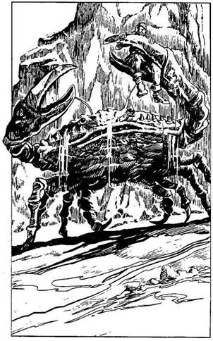
211.
Félúton a házhoz váratlanul észreveszed, hogy a parton hatalmas homokhalom kezd a levegőbe emelkedni. Ebből hat nagy tüskés láb és egy pár olló bukkan elő, majd hatalmas rákpáncél jelenik meg: az ijesztő méretű Óriásrák tornyosul előtted. A Rák végigrohan a homokon, és egyik ollójával megragadja Mungót. Barátod fájdalmasan felordít, de hiába minden, képtelen kiszabadulni a satuszerű ollók fogságából. Ha segíteni akarsz Mungónak, lapozz a 182-re. Ha inkább visszarohansz a kőházba, lapozz a 307-re.
212.
A nap egyre melegebben süt, és aggódni kezdesz, mert a kulacsod majdnem teljesen üres. Vizet keresel. Végül találsz egy sziklamélyedést, melyben összegyűlt az esővíz. Jócskán iszol belőle, majd megtöltöd a kulacsodat is. Már éppen indulni készülsz, amikor a sziklamedence oldalában krétajeleket fedezel fel. Ha el akarod olvasni, mi van odaírva, lapozz a 72-re. Ha inkább azonnal útnak indulsz, lapozz a 30-ra.
213.
Hamarosan elérsz egy másik elágazáshoz. Ha balra akarsz fordulni, lapozz a 68-ra. Ha jobbra akarsz menni, lapozz a 383-ra.
214.
A Sámán örül, hogy most már elárulhatja neked a titkát. Tekintetét a magasba emeli, s széttárt karral, mozdulatlanul áll. Teljes transzban van, amikor elmeséli neked, hogyan is néz ki a parazita Goncsong. Olyan, mint egy aratópók, és csupán a fullánkja mélyed bele a gazdája - jelen esetben a Gyíkkirály - agyába. Ahhoz, hogy valaki megölje, először is a fullánkját kell megsemmisíteni, különben képes és átugrik a támadójára, hogy új gazdát találjon. De amíg irányítása alatt tartja a Gyíkkirályt, az szinte legyőzhetetlen, és az egyszerű fegyverek nem tehetnek kárt benne. Csupán a lángpallos képes a Goncsong gazdáját megsebesíteni. A Gyíkkirály maga is használ ilyen fegyvert, vagyis egy olyan varázskardot, amit bármikor rozsdás késsé változtathat. Ezt aztán senki nem akarja ellopni. A lángpallos birtokában és a Goncsong irányítása alatt a Gyíkkirály halálos ellenfél. Csak egyetlenegy teremtmény képes megijeszteni - a majom! A Gyíkemberek velük született majomfrászban élnek, s ezt még a Goncsong ereje se tudja legyőzni. A Sámán lassan magához tér a transzból, és délkelet felé mutatva közli, hogy a fogolytelep arra van. Elköszönsz tőle, és lemész a tűzhányó aljába, hogy onnan menj tovább a Gyíkkirály erődítménye felé. Lapozz a 168-ra.

215.
Megmarkolsz egy lángoló faágat, az egyik kunyhó mögé rohansz és felgyújtod. Aztán a másikhoz rohansz, és azt is felgyújtod. A kunyhók egy pillanat alatt lángban állnak, te pedig a következő kunyhó mögül lesed, hogyan rohangálnak ide-oda a kétségbeesetten ordítozó Fejvadászok a tisztáson. Az oszlophoz kikötött férfi egy időre őrizetlenül marad. Odafutsz hozzá, hogy kiszabadítsd. Egyetlen kardcsapással átvágod az indát, mellyel az oszlophoz kötözték, és rohanni kezdesz vissza a dzsungelba. Futás közben odakiáltasz neki, hogy kövessen. Az egyik Fejvadász észrevesz, és feléd hajítja a dárdáját. Dobj az egyik dobókockával. Ha a dobott szám 1 vagy 2, lapozz a 76-ra. Ha a dobott szám 3 vagy 4, lapozz a 250-re. Ha a dobott szám 5 vagy 6, lapozz a 323-ra.
216.
Közlöd a Törpével, hogy te vezeted a támadást az erődítmény ellen, és megkérdezed, merre rejtőzik a Gyíkkirály. Elmondja, hogy a király az erődítmény oromzati lőréseinél áll, onnan lelkesíti a
seregét. Megmondod a Törpének, hogy elintézed a Gyíkkirályt, aztán visszajössz, és őt is kiszabadítod. Elköszönsz tőle, és kirohansz a nyitott ajtón. Lapozz a 180-ra.

217.
A Köpködő Varangy foga fájdalmasan váj bele a karodba, de szerencsére nem abba, amelyikkel vívni szoktál. Veszítesz 2 Életerő pontot! Sikerül szétfeszítened a kardoddal a Köpködő Varangy pofáját, és ki tudsz mászni hatalmas hasa alól. Felállsz, és vakon ráveted magad.
Köpködő Varangy Ügyesség 5 Életerő 6
Vakságod miatt minden egyes Fordulóban 3-mal kell csökkentened a Támadóerődet. Ha győzöl, lapozz a 134-re.
218.
Beleakad a lábad egy tüskés bokorba, s kiserken a véred. Megittad az ánizsízű folyadékot a tengerparti kunyhóban talált kancsóból? Ha igen, lapozz a 258-ra. Ha nem, lapozz a 146-ra.

219.
A dárda elzúg a disznó mellett, és beleáll a földbe. Szomorúan nézed, amint reménybeli vacsorád eltűnik a távolban. Felkapod a dárdádat, és folytatod az utadat nyugat felé. Lapozz a 170-re.
220.
A Sámán rámutat a sziklatömbre, és kéri, hogy emeld azt föl. Két karoddal átölelve fölemeled. Dobj mindkét kockával. Ha a kapott összeg ugyanannyi vagy kevesebb, mint Életerő pontjaid száma, lapozz a 98-ra. Ha a kapott összeg nagyobb, mint Életerő pontjaid száma, lapozz a 369-re.

221.
Annak a helynek a közelében, ahol az Óriás Sárkánylégy fekszik összezsugorodva, kagyló alakú gombát veszel észre, amely egy korhadó fatönkhöz tapadt. Ha enni akarsz a gombából, lapozz a 385-re. Ha inkább ismét felkerekedsz és nekivágsz a dzsungelnak, lapozz a 224-re.
222.
Balra mozgást észlelsz; apró állat fut át a cisztáson. Amikor felbukkan, látod, hogy egy kismalac. A sült malac gondolatára csorogni kezd a nyálad. Ha van dárdád, lapozz a 342-re. Ha nincs, lapozz a 167-re.
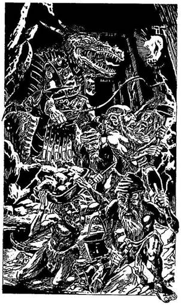
223.
A szemed elé táruló látvány mérhetetlenül feldühít. Hat félmeztelen Törpe, akiket a lábuknál fogva egymáshoz láncoltak, akár a barmokat, kalapáccsal a kezében a sziklafalat bontja. Egy fegyveres Gyíkember bikacsökkel ösztönzi őket gyorsabb munkára. Leteszed a vödröt, és megtámadod a Gyíkembert.
Gyíkember Ügyesség 8 Életerő 7
Ha a két Forduló után még mindig életben vagy, lapozz a 3-ra.
224.
Úgy döntesz, hogy eléggé eltávolodtál északnyugatra a Fejvadászok falujától; már nem kell tartanod tőlük. Így aztán egyenesen átvágsz a dzsungelen nyugati irányba. Alig teszel meg egy rövidke utat, amikor meglepetten látod, hogy teljesen kopár tisztáshoz értél. Hatalmas zöld kristály fekszik a tisztás közepén, és izzó meleget áraszt. Mit teszel?
Megkerülöd a kristályt, és folytatod az utadat
nyugat felé? Lapozz a 71-re.
Megérinted a kristályt? Lapozz a 232-re.
Megpróbálsz lepattintani egy darabot a
kristályból a kardoddal? Lapozza 370-re.
225.
A Sámán résnyire szűkült szemmel rád kiált: - Hazug! - Hirtelen remegni kezd a föld, és hatalmas szakadék nyílik meg alattad. Gőz csap fel belőle, leforrázza a lábadat. Vesztesz 3 Életerő pontot.
Bocsánatot kérsz a Sámántól, amiért hazudtál neki, és megmagyarázod, hogy csak azért tetted, mert el akartad nyerni beleegyezését. Nem tudtad, hogy a toll az ő békeszimbóluma. A Sámán morogva megérinti botjával a lábadat, s a fájdalom azonnal elmúlik. Lapozz a 301-re.
226.
A vágat szűkülni kezd. Mivel a mennyezet igen alacsony, le kell hajolnod. A bánya használaton kívüli részébe jutottál. Ha ezen a vágaton akarsz továbbmenni, lapozz a 213-ra. Ha inkább visszatérsz az előző elágazáshoz, és ott balra fordulsz, lapozz a 101-re.
227.
Ha van nálad három vaskulcs, lapozz a 273-ra. Ha nincs, lapozz a 162-re.
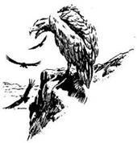
228.
Számos szikla áll ki a vízből, ki kell kerülnöd őket. Ez nehéz munka, és egyre fáradtabb leszel. Úgy döntesz, hogy rövid időre kievezel a partra pihenni. Lefekszel a fák árnyékában, és elalszol. Amikor felébredsz, látod, hogy a tested telis-tele van szúnyogcsípéssel. Tedd próbára a Szerencsédet! Ha Szerencséd van, lapozz a 236-ra. Ha nincs Szerencséd, lapozz a 103-ra.
229.
Amint előrehatolsz a buja bozótban, távoli tamtamdob hangját hallod abból az irányból, ahonnan a füstöt láttad felszállni. Ha továbbra is délnyugatra tartasz, lapozz a 337-re. Ha inkább nyugat felé mész, lapozz a 113-ra.
230.
A vízsugár olyan erővel tör rád, hogy kis híján lesodor a tutajról. Szerencsére meg tudod tartani az egyensúlyodat, és nem esel le róla. A nyitott zsák elnyeli a vizet, egyre több és több ömlik bele. A zsák olyan, mintha nagy darab, puha zselé lenne.
Az örvény olyan gyorsan tűnik el, amilyen gyorsan keletkezett, mert a Víziszörny feneketlen zsákod foglya lett! Nyertél 2 Szerencse pontot! Viszont szerencsétlenségedre a tutaj kettétörik, ezért úgy döntesz, hogy átgázolsz a vízen a jobb partra. Nem kockáztatod meg. hogy megszökjön a Víziszörny, ezért gödröt ásol, és betemeted a Feneketlen Zsákot. (Jelöld a Kalandlapodon a változást!) Nincs más választásod, gyalog kell folytatnod az utadat. Lapozz a 197-re.

231.
A hordó tele van ananásszal; valamennyi rohadt, csak úgy hemzseg a muslicáktól. De a hordó mögött eldugva egy vízzel teli üveget veszel észre a földön. Kihúzod a dugót, és beleszagolsz. Lehet, hogy víz van benne, de iszonyatosan poshadt. Ha meg akarod inni a folyadékot, lapozz a 6-ra. Ha inkább továbbmész a szemközti falon lévő ajtóhoz, lapozz a 353-ra.
232.
Lassan, izgatottan érinted meg az izzó kristályt. Forróság árad szét a testedben, igen nagy erőt érzel magadban. Nyersz 3 Életerő pontot, mert a kristály regeneráló hatással van rád. Ha eddig még nem tettad volna meg, most lepattinthatsz a kardoddal egy darabot a kristályból - lapozz a 370-re. Vagy ha úgy gondolod, elhagyhatod a tisztást, és folytathatod az utadat a dzsungelen át nyugatra. Lapozz a 71-re.
233.
Hirtelen vörösen izzani kezd egy sor kő, és mutatja a tűzhányó oldalában felfelé vezető utat. Úgy döntesz, hogy követed a vörös kövek vonalát. Lapozz a 249-re.
234.
Elkeseredetten harcolsz a dühöngő árral szemben, de nem tudsz megmenekülni a Víziszörny örvényéből. Erőd egyre csökken, már nem bírsz tovább úszni. Elveszted az eszméletedet, és elnyel a Szörny, hogy mindörökre az ő vízi világában maradj.

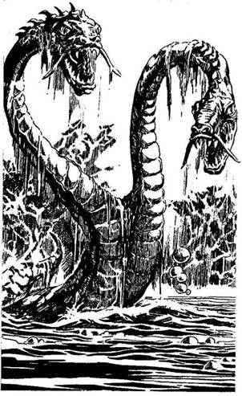
235.
A Mocsári Szökdécselő rövidesen nyugatnak fordul. Kíváncsi vagy, vajon csapdába akar-e csalni, vagy pedig biztonságosabb útvonalat választott a mocsáron át. Kérdésedre hamarosan megkapod a választ, ugyanis váratlanul hatalmas állat emelkedik ki a mocsárból. Ez a kétfejű Hidra. Hatalmas, meztelen csiga-teste feléd siklik, s mindkét fejét támadásra készen feléd fordítja. Ha van dárdád, lapozz a 272-re. Ha nincs dárdád, lapozz a 29-re.
236.
Kibírhatatlanul viszket a sok csípés, láznak még sincs semmi nyoma. Visszaugrasz a tutajra, és ismét folytatod az utat a folyón felfelé. Lapozz a 379-re.
237.
A Sámán vállat von, aztán felszólít, hogy azonnal távozz. Délkeleti irányba mutat, és azt mondja, hogy a fogolytábor arra van. Megfordulsz, és a tűzhányó oldalában lemész, hagy felkutasd a Gyíkkirály birodalmát. Lapozz a 168-ra.
238.
Az ital ánizsízű és tejfehér. Az utolsó cseppig kiiszod, de nem érzel semmit, így csak sejtheted, hogy megvéd utad során. Leteszed a kancsót, és kilépsz a házból. Lapozz a 152-re.
239.
Csupán egyetlen fürge Grannituszt tudsz feltartóztatni, és még kettővel kell megküzdened, méghozzá külön-külön.
Első Grannitusz Ügyesség 4 Életerő 3
Második Grannitusz Ügyesség 3 Életerő 2
Ha te győzöl, lapozz a 192-re.
240.
A dárda átdöfi a válladat, és a földre rogysz. Veszítesz 2 Életerő és 1 Ügyesség pontot. A Hobgoblin pánikszerűen elmenekül, ahelyett hogy végezne veled. Amikor már olyan jól érzed magad, hogy lábra tudsz állni, átmész a kőhídon a szakadék túloldalára. Lapozz a 139-re.
241.
Mindkét Gyíkember háttal áll, amikor rájuk veted magad. Az egyiket sikerül leütnöd a kardod markolatával, úgyhogy ez el is veszti az eszméletét, de a másikkal meg kell küzdened.
Gyíkember Ügyesség 9 Életerő 8
Ha legyőzöd, lapozz a 189-re.
242.
A lány mozdulatlanul áll, amíg elfutsz tőle. Tedd próbára a Szerencsédet! Ha Szerencséd van, lapozz a 142-re. Ha nincs Szerencséd, lapozz a 205-re.
243.
Az egyik Pigmeus előrelép, és kikapja a kezedből a baltát. A többiek körülveszik, és énekelni kezdenek. Szemmel láthatólag igen elégedettek a zsákmánnyal, amelyet vallásos kegytárgynak tartanak. Mit teszel?
Otthagyod őket, és eltűnsz a dzsungelban
nyugati irányban? Lapozz a 7-re.
Kérsz tőlük valamit a baltáért
cserébe? Lapozz a 86-ra.
Rájuk támadsz a kardoddal? Lapozz a 359-re.
244.
Kardot rántasz az ugrásra kész Goncsongra, és átdöföd dagadt potrohát. Legyőzted a Gyíkkirályt és a Goncsongot is. Lapozz a 400-ra.
245.
Egy szikladarab a válladat éri, de éppen csak megüt. Vesztesz 2 Életerő pontot! Két karoddal véded a fejedet, és amilyen gyorsan csak tudsz, lerohansz a szurdokon. Lapozz a 253-ra.
246.
A mély tárnába nem tudsz másképp lejutni, csak ha leugrasz. Úgy döntesz, hogy ezt nem kockáztatod meg, hanem inkább visszamész az elágazáshoz. Lapozz a 135-re.
247.
A Medve nyakában bőr nyakörv van, amelyen rézsíp lóg. A sípot zsebre vágod és elindulsz, hogy megkeresd a Sámánt. Lapozz a 27-re.
248.
Elkapod a fejed a vízsugár elől, és visszanyúlsz a kardodért. Készen állsz, hogy félreugorj a következő adag kellemetlen sav elől, melyet a Köpködő Varangy bocsát ki. Hirtelen kiugrik a vízből, hogy tűhegyes fogait beléd mélyessze.
Köpködő Varangy Ügyesség 5 Életerő 6
Ha győzöl, lapozz a 21-re.

249.
Az egyik szikla mögül hirtelen egy férfi feje bukkan elő; a haját szirtes gyöngyök és tollak díszítik. Óvatosan lép elő a rejtekhelyéről. Az egyik kezében tolldíszes bot van, a másikban meg két állatcsont. Ő a sziget varázslója, a Sámán, akit keresel! Van a hajadban egy madártoll? Ha van, lapozz a 199-re. Ha nincs, lapozz a 176-ra.
250.
A dárda elsüvít és beleáll a szegény férfi hátába, akit az imént mentettél meg. Kínjában felordít, majd a földre zuhan. Már nem segíthetsz rajta. Amint a többi Fejvadász észreveszi, hogy mi történik, te gyorsan visszarohansz a dzsungelba, de rikácsoló hangjuk közvetlenül mögötted zúg. Lapozz a 102-re.
251.
Amíg megtalálod és kiszabadítod az összes foglyot, 4 Életerő pontot veszítesz a csatákban. Ha még mindig életben vagy, úgy te vagy a vezére hatvanhárom elszánt, bosszúra vágyó fogolynak. Lapozz a 201-re.
252.
A Hobgoblin szeme felcsillan az aranyrög láttán. Máris a markát tartja, mohón várva, hogy megvesztegesd. Az aranyrögöt a kezébe nyomod, és átmész a kőhídon a szakadék túloldalára. Lapozz a 139-re.
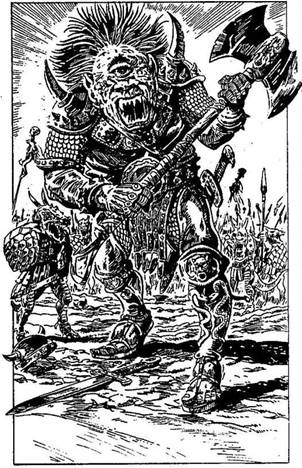
253.
Minden erődet összeszedve rohansz előre a keskeny szurdokban, s csak abban reménykedsz, hogy több sziklaomlás már nem lesz. A szurdok egyszer csak kiszélesedik, s végre lassíthatsz. Rettenetes klausztrofóbiád elmúlik. Lapozz a 382-re!
254.
A csata nem a legkedvezőbben alakul a számodra, mert egyre több embered esik áldozatul a Gyíkkirály megszállott seregének. Látod, hogy a vezérük a csatasor mögött üvöltve buzdítja harcra az embereit. A vezér hatalmas Küklopsz; páncélruha van rajta, a kezében kétélű balta. Le kell győznöd, hogy a saját embereiddel egyesülhess.
Küklopsz Ügyesség 10 Életerő 10
Ha legyőzöd, lapozz a 299-re.

255.
Leversz néhány meglazult szikladarabot, amikor megpróbálsz elugrani a dárda elől, de sajnos az fájdalmasan fúródik bele a combodba. 3 Életerő pontot veszítesz! A Barlangi Nő elégedetten kiált fel, és bunkósbotját lengetve rohan le a dombról.
Összeszorított foggal kihúzod a dárdát a combodból, majd előrántod a kardodat, hogy védd magad.
Barlangi Nő Ügyesség 5 Életerő 5
Lábsérülésed miatt minden egyes Fordulóban 2-vel kell csökkentened a Támadóerődet. Ha te győzöl, lapozz a 79-re.
256.
Kinyújtod a kezedet, és ujjaiddal épp hogy sikerül elérned a kardodat. Már nem kapsz levegőt, és az arcod paprikavörös a nyakadon kidagadó erektől. Elkeseredetten csapkodod a kardoddal az indát, míg végre sikerül átvágnod, és megszabadulnod halálos szorításától. Köhögni kezdesz. Miközben a nyakadat masszírozod, a förtelmes indát nézed, melyből bíborvörös lé csöpög. Bár szerencsés vagy, hogy megmenekültél a húsevő fa fogságából, mégis megsérültél. 1 Ügyesség pontot és 2 Életerő pontot veszítesz! Fáradt vagy, de úgy döntesz, jobb lesz, ha továbbmész. Lapozz a 81-re.
257.
Terved csődöt mond! A vízsugár olyan erővel zúdul rád, hogy kiveri kezedből a varázszsákot, ami elsüllyed. A tutajod kettétörik, és a vízfüggöny mögül meghallod a Víziszörny gurgulázó kacaját. Levegőért kapkodsz a víz alatt. Minden erődet összeszedve megpróbálsz kiúszni a partra. Dobj mindkét kockával! Ha a kapott eredmény ugyanannyi vagy kevesebb, mint Ügyesség pontjaid száma, lapozz a 150-re. Ha a kapott összeg magasabb, mint Ügyesség pontjaid száma, lapozz a 234-re.
258.
Bár a bokor leveleinek hegye mérgezett, mégsem sérülsz meg. Továbbmész, és tudod, hogy iszonyatos veszedelmet kerültél el. Lapozz a 291-re.
259.
Tudod, hogy a Köpködő Varangyok soha senkivel nem osztják meg vízi birodalmukat, ezért sietve fejest ugrasz a vízbe, és kiemeled a faládikót. A parton kardod élével felfeszíted a tetejét, és a láda tartalmát a fűre szórod. Egy színes folyadékkal teli üvegfiolát találsz benne, egy kis bársonyzsákot, egy pár piros bőrcsizmát és egy aranygyűrűt. Mit teszel?
Megiszod a fiola tartalmát? Lapozz a 311-re.
Kinyitod a zsák száját? Lapozz a 26-ra.
Felpróbálod a csizmát? Lapozz a 94-re.
Felhúzod a gyűrűt az ujjadra? Lapozz a 297-re.
260.
Kardoddal akarod feltartóztatni a Goncsongot, de elhibázod: a fejed búbján landol, és agyadba mélyeszti a fullánkját. Mostantól kezdve a Goncsong irányítja az akaratodat, és csupán tehetetlenül szemlélheted, amint a Gyíkkirály serege megsemmisíti demoralizált csapatodat. A csatát elvesztetted!
261.
A többi Fejvadász azt hiszi, hogy legyőzhetetlen, isteni erővel bíró varázsló vagy. Sarkon fordulnak, és sipító fejhangon ordítva elmenekülnek. Ha ki akarod nyitni az egyik halott Fejvadász mellett heverő zsákot, lapozz a 187-re. Ha inkább továbbmész nyugatnak, lapozz a 113-ra.
262.
A feléd tartó Gyíkember rád kiált, és megkérdi, merre mész. Ilyen közelről nem tudod eljátszania Gyíkember szerepét. Elő kell rántanod a kardodat.
Gyíkember Ügyesség 7 Életerő 8
Amint megnyered az első Fordulót, lapozz a 386-ra.
263.
Tudtad, hogy a kardforgató karodat nem szabad beledugnod a kőgyűrűbe, így aztán sérült kezed nem okoz különösebb gondot. Veszítesz 1 Ügyesség pontot! Kelletlenül belehajítod a kőgyűrűbe Felszerelési Tárgyaid egyikét, és várod, mi történik. Lapozz a 233-ra.

264.
Szervezeted gyenge és a méreg gyorsan hat. Lüktetni kezd a karod és elönt a veríték. Ájulás környékez. Veszítesz 5 Életerő pontot! Ha Életerő pontjaidnak száma 9 vagy ennél kevesebb, lapozz a 124-re. Ha 9 fölött van, lapozz a 364-re.
265.
A Törpék gyűlölettől fűtve rátámadnak az Orkokra. A harc nem tart sokáig, az elkeseredett Törpék gyorsan végeznek az Orkokkal. Lapozz a 121-re.

266.
Az ajtó nem ereszt, képtelen vagy kinyitni. Nincs más választásod, mint hogy visszamenj az erődítmény udvarára, és megpróbáld kinyitni az onnan nyíló többi ajtót. Lapozz a 84-re.
267.
Meghúzod a fogantyút és fölemeled a csapóajtót. Alatta egy kis üregben egy faládát találsz. Kiemeled, és leteszed a földre. A fedele viasszal van lezárva. Ha ki akarod nyitni a ládát, lapozz a 354-re. Ha inkább úgy döntesz, hogy elhagyod a házat, lapozz a 152-re.
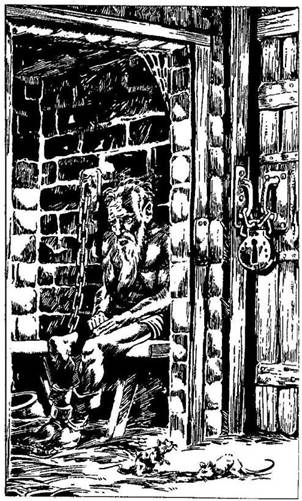
268.
Az ajtó egy keresztfolyosóra nyílik. A folyosó túloldalán vasráccsal védett cellaajtók sorakoznak egymás mellett. Balra nézel, s látod, hogy a folyónak itt vége szakad, tehát jobbra indulsz. Az utolsó cellában a faajtó mögött törékeny öregembert látsz. Egy fapadon ül, bilincsbe vert lábát a falhoz láncolták. Cellájának ajtaja nyitva van, de a folyosóra kivezető faajtót erős lakattal zárták le. Mit teszel?
Kiszabadítod az öreget? Lapozz a 166-ra.
Megpróbálod kinyitni a faajtót? Lapozz a 227-re.
269.
Félúton, a hegy oldalában, bal kéz felől egy barlang bejáratát veszed észre, melynek félkör alakban elhelyezkedő köveit sikító színűre festették, és mindegyiknek a tetejére egy koponyát tettek. Ha fel akarsz mászni a barlanghoz, lapozz az 59-re. Ha inkább továbbmész a tűzhányó irányába, lapozz a 303-ra.
270.
Elhatározod, hogy megtámadod a Gyíkembereket. Abban reménykedsz, hogy élve megúszod az összecsapást, és ki tudsz majd szedni belőlük valamit. Csöndben kikúszol a fák rejtekéből egészen a kunyhó sarkáig. Körülnézel, és észreveszed, hogy a Gyíkemberek még mindig beszélgetnek. Kivont karddal megvizsgálod a terepet, hogy lásd, vajon sikerülhet-e a terved? Tedd próbára a Szerencsédet! Ha Szerencséd van, lapozz a 241-re. Ha nincs Szerencséd, lapozz a 43-ra.
271.
A Gyíkkirály hirtelen megtorpan, amint észreveszi a majmodat. Remegni kezd - szemmel láthatóan fél a majomtól. Tedd próbára a Szerencsédet! Ha Szerencséd van, lapozz a 22-re. Ha nincs Szerencséd, lapozz a 123-ra.
272.
Amint a Hidra a közeledbe ér, dárdáddal megcélzod az egyik fejét. Dobj az egyik dobókockával. Ha a dobott szám 1, 2, 3 vagy 4, lapozz a 209-re. Ha a dobott szám 5 vagy 6, lapozz a 344-re.
273.
Az egyik kulcs pontosan illik a zárba. Kinyitod az ajtót. Lapozz a 395-re.
274.
A vágatban egyenesen mész előre, amíg egy függőlegesen lefelé haladó aknához nem érsz. Belülről falétrát támasztottak az oldalához, de amint letekintesz a mélybe, nem látod az akna végét. Ha le akarsz menni a létrán, lapozz a 315-re. Ha inkább visszamész az elágazáshoz, majd onnan a vágat másik végébe indulsz, lapozz a 28-ra.
275.
Amint megérinted a kést, az egy szemvillanás alatt átalakul. Az ócska, régi kés csodálatos lángpallossá változik. Ez a Gyíkkirály egyik fegyvere. Nyertél 2 Ügyesség pontot és 2 Szerencse pontot! Új kardoddal suhintasz egyet a levegőbe, aztán nekivágsz a folyosónak, hogy eljuss a legtávolabbi ajtóhoz. Lapozz a 312-re.
276.
A Pigmeusok valamit morognak, majd rád kiáltanak, de nem érted a nyelvüket. Szemmel láthatóan akarnak valamit tőled, de nem tudod, hogy mit. Mit adnál oda nekik?
A kisbaltát? Lapozz a 243-ra.
A vasrudat? Lapozz a 327-re.
Élelmiszert? Lapozz a 126-ra.
A felsoroltak közül semmid
sincs? Lapozz a 137-re.
277.
A kardfogó kezed sérült meg. 3 Ügyesség pontot veszítettél! Vonakodva bár, de mégis bedobsz egy tárgyat a kőgyűrűbe, és várod, hogy mi történik. Lapozz a 233-ra.
278.
A vágat hirtelen véget ér, és aggódni kezdesz, hogy eltévedtél. Veszítesz 1 Szerencse pontot! Megfordulsz, és visszatérsz az előző elágazáshoz. Ha egyenesen akarsz továbbmenni, lapozz a 70-re. Ha jobbra fordulsz, lapozz a 172-re.
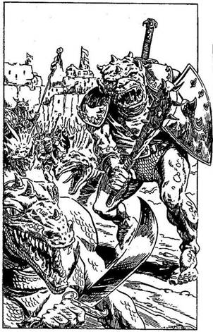
279.
Lent a völgyben egy sűrű kis erdőhöz érsz. A fák közül hirtelen ismerős arcok bukkannak elő. A Törpék, az Elfek és a bányából kiszabadított férfiak várnak itt rád. Örülsz, hogy újra látod őket, és elmondod nekik, mi történt veled azóta, hogy utoljára találkoztatok. Közlöd velük, hogy az erődítményt azonnal meg kell támadni, és a Gyíkkirályt te fogod elintézni. Összegyűjtöd őket, és az élükön haladva levezeted őket a völgybe. Amint a kőerődítmény felé futsz, látod, hogy a fakapuja tárva-nyitva áll. A Gyíkkirály ellened küldött őrei és mutánsai rontanak rátok. Kis csapatodnak össze kell csapnia a Gyíkkirály katonáival. Dobj az egyik kockával! Ha 1-et vagy 2-t dobsz, lapozza a 185-re. Ha 3-mat vagy 4-et dobsz, lapozz a 308-ra. Ha 5-öt vagy 6-ot dobsz, lapozz a 42-re.
280.
Miután alaposan átvizsgálod minden porcikádat, hogy végleg megszabadultál-e a mocsári élősködőktől, nyugati irányban folytatod az utat a mocsáron át. Két hegy előtted emelkedik, de te úgy döntesz, hogy a közöttük húzódó szurdokon mész tovább. Lapozz a 362-re.

281.
Nehéz helyzetben vagy! Nem tudsz megállni gurulás közben, és egyre csak bukfencezel lefelé a szurdokba. Fájdalmas puffanással érsz földet.
Veszítesz 2 Életerő pontot! Felállsz, leporolod magad, és úgy döntesz, a szurdokban mész tovább. Lapozz a 119-re.
282.
Óvatosan nyitod ki a zsák száját; hátha mérges kígyó van benne, de meglepetten tapasztalod, hogy élelmet rejt: lépes mézet, búzalepényt és gyümölcsöt. Ha meg akarod enni az élelmet, lapozz a 116-ra. Ha nem eszed meg, hanem inkább elteszed későbbre, és továbbmész lapozz a 27-re.
283.
Nem bírod a megpróbáltatást, ezért intesz a Sámánnak, hogy hagyja abba. Megbuktál a próbán, így a Sámán nem fogja megosztani veled a titkát. Délkeleti irányba mutat, azt állítja, hogy a fogolytábor arra van, továbbá közli veled, hogy a Goncsonggal egyedül kell megbirkóznod. Megfordulsz, és lefelé indulsz a tűzhányó oldalában, hogy megkeresd a Gyíkkirály erődítményét. Lapozz a 168-ra.
284.
Visszamész a sebesült Gyíkemberhez, és felszólítod, hogy adja meg magát. Eldobja a kardját és a korbácsát, kétrét görnyed előtted, majd erősen zihálva a földre bukik. Két karját a háta mögött összekötözöd a korbácsával, és betuszkolod a kunyhóba. Követeled, hogy mondja meg, hol van a bánya. Elárulja, hogy a bánva bejárata nincs messze; körülbelül száz méterre található a kunyhó mögött. Odakötözöd a Gyíkembert egy oszlophoz és a kunyhót elhagyva elindulsz, hogy megkeresd a bányát. Lapozz a 147-re.
285.
A Goblin felriad álmából. Felnyúl, és két vézna kezével megpróbálja átfogni a nyakadat. Ha rajtad van Sog sisakja, megmenekülsz, de meg kell vívnod vele - lapozz a 322-re. Ha nincs rajtad Sog sisakja, a Goblin éles körmei belevájnak a nyakadba. Veszítesz 1 Életerő pontot. Küzdj meg a Goblinnal! Lapozz a 322-re!
286.
Körülbelül félúton lehetsz az indán, amikor egy fejet pillantasz meg a magasles egyik sarkában. Egy ősz öregember áll ott, aki szikrázó szemmel, dühösen így szól: - Takarodj innét, vagy megbánod! - Ha úgy döntesz, hogy tovább mászol az indán fölfelé, lapozz a 117-re. Ha engedelmeskedsz neki és az indán lecsúszva továbbmész északnyugatra, lapozz a 375-re.
287.
Elég sokáig tart, míg a Hobgoblin rájön, hogy rossz jelszót mondtál. Végül leesik neki a tantusz, és neked szegezi a dárdáját. Lapozz a 328-ra.
288.
Kutatni kezdesz a cserjében az elrejtett tutaj után. Hamarosan rátalálsz. Behúzod a vízbe, és felugrasz rá. A folyó sekély, egy hosszú rúd segítségével könnyűszerrel tudsz az árral szemben hajózni. Lapozz a 387-re.

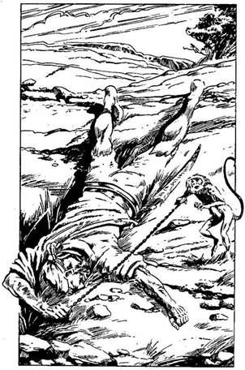
289.
A szörnyűséges mutáns mögé ugrasz és belevágod a kardodat a hátába. Tedd próbára a Szerencsédet! Ha Szerencséd van, lapozz a 144-re. Ha nincs Szerencséd, lapozz a 45-re.
290.
A viszketés szinte elviselhetetlen. Nem tudsz mást csinálni, vakarod az arcodon lévő ragyákat. Veszítesz 1 Életerő és 1 Szerencse pontot! Ha a melletted lévő bokor leveleivel be akarod dörzsölni az arcodat, lapozz a 143-ra. Ha megpróbálod megenni a gombát, lapozz a 110-re.
291.
Egy halott tengerész fekszik a cserjésben. Valószínűleg a kalózhajó legénységének egyik tagja, akit a mutáns Gyíkember megölt. Egy majom igyekszik kiszabadulni a tengerész kezében lévő lánc fogságából. Ha magaddal akarod vinni a majmot, lapozz a 330-ra. Ha ott hagyod, ahol van, és továbbmész, lapozz a 350-re.
292.
A sisak több mint százéves, és egykor egy Sog nevű legendás harcosé volt, aki maga is foglalkozott varázslással. A sisak viselőjétől úgy megijed minden ellenfele, hogy az automatikusan megnyeri bármely csatában az első Fordulót. Az ellenfélnek csak annyi bátorsága marad, hogy védekezzen a második Fordulóban. Büszkén a fejedre teszed új szerzeményedet, majd óvatosan lemész a dombról a szurdokba. Nyugati irányba mész tovább. Lapozz a 119-re.
293.
Mire megleled és kiszabadítod az összes foglyot, 2 Életerő pontot veszítesz a csatában. Ha még mindig élsz, te lehetsz a vezére hatvanhárom elszánt, bosszúra vágyó harcosnak. Lapozz a 201-re.
294.
A Varázsgyűrű ismeretlen ereje óvatosságra int: az sugallja, hogy az öreg csak látomás; a rémséges Alakváltoztató műve. Kirohansz, a cellából, és becsapod magad mögött az ajtót, éppen akkor, amikor az öreg vadállattá kezd átváltozni. Zöld tüskék bújnak elő a ruháján át, és nyáladozó állkapcsát szélesre tátva kivillantja pengeéles fogsorát. Az Alakváltoztatót ejtetted foglyul a cellában, s most már megpróbálhatod kinyitni a faajtót. Lapozz a 227-re.

295.
A Pigmeus megsértődik, hogy nem fogadtad el az ajándékát. Dobbant egyet a lábával és eldobja a fúvócsövét. A többi Pigmeus körülfog benneteket;
csak akkor nyerheted vissza a becsületedet, ha megvívsz a Pigmeussal. Előrántod a kardodat, hogy védekezz a felbőszült Pigmeussal szemben.
Pigmeus Ügyesség 6 Életerő 5
Ha legyőzöd, lapozz a 96-ra.
296.
A Gyíkkirály hirtelen megdermed, amikor tekintete találkozik a majoméval. Remegni kezd, hisz a majmoktól való félelme közismert. Úgy meg van rémülve, hogy csak nehezen tudja felemelni a kardját, hogy védekezzen, amikor megtámadod. Csupán a Goncsong kényszerítő befolyása alatt kezd amolyan látszatellenállásba.
Gyíkkirály Ügyesség 6 Életerő 15
Ha legyőzöd, lapozz a 153-ra.

297.
Abban a pillanatban, amikor az ujjadra húzod a gyűrűt, nagyon elszédülsz. Meg akarsz szabadulni a gyűrűtől, de az nem mozdul. Varázsgyűrű van az
ujjadon. 2 Ügyesség pontot veszítesz. Ha még nem tetted volna:
Kiihatod a fiola tartalmát Lapozz a 311-re.
Kinyithatod a zsákot Lapozz a 26-ra.
Felpróbálhatod a csizmát Lapozz a 94-re.
Ha egyikhez sincs kedved, folytathatod utadat nyugat felé, a tisztáson át. Lapozz a 222-re.
298.
Koromsötét van a fúrólyukban, amely akár több kilométer hosszú is lehet. Úgy gondolod, hogy nem vezet sehova. Nincs sok helyed, hogy megfordulj, így aztán fejedet két lábad közé hajtva bukfencezel. Visszamászol a fúrólyukon, és megkönnyebbülsz, amikor eléred a fővágatot. De amikor bukfenceztél a fúrólyukban, hogy meg tudj fordulni, valami kiesett a hátizsákodból. Húzz ki egy tárgyat a Felszerelésedből. Veszítesz 1 Szerencse pontot! Kimászol a fúrólyukból, jobbra fordulsz, és lefelé mész a vágatban. Lapozz a 47-re.
299.
Embereid fellelkesülnek a Küklopsz halálán, és újult erővel folytatják a harcot. Amikor a Gyíkkirály serege kezd visszavonulni, átvágod az arcvonalukat, és odarohansz az erődítmény fakapujához. Belépve a belső udvarba jutsz, ahonnan egy-egy szárnyas ajtó vezet az épületbe. Ha a balra nyíló szárnyas ajtón akarsz bemenni, lapozz a 268-ra. Ha inkább a veled szemben lévő ajtón kívánsz benyitni, lapozz a 84-re.
300.
A Víziszörny rázuhan a tutajodra és darabokra töri. Gurgulázó kacaja túlharsogja a vízáradat moraját. Levegő után kapkodsz a rád zúduló víztömeg alatt. Összeszeded minden erődet, és megpróbálsz kiúszni a partra. Dobj mindkét kockával. Ha a kapott összeg ugyanannyi vagy kevesebb, mint Ügyesség pontjaid száma, lapozz a 150-re. Ha a kapott ősszeg nagyobb, mint Ügyesség pontjaid száma, lapozz a 234-re.
301.
Bár a Sámán rosszul beszél anyanyelveden, mégis úgy látod, ragyogóan megért mindent, amit mondasz neki, de mielőtt meghallgatna, ragaszkodik hozzá, hogy tűzz a hajadba egy tollat. Saját tolldíszéből ajánl fel egyet, amit a hajából vesz ki, és kéri, hogy adj érte valamit cserébe. Nincs más választásod, eleget kell tenned az óhajának (ezt jegyezd föl a Kalandlapodra!). Végül elmosolyodik, és várja, hogy beszélj. Lapozz a 199-re.
302.
Éppen le akarod törni az ágat, amikor egy ugató kutya szalad oda hozzád. A Fejvadászok, amint meglátnak, üvöltve köréd sereglenek. Lándzsáikkal és bunkósbotjaikkal hadonászva rohannak rád. Ha harcolni akarsz ellenük, lapozz a 331-re. Ha inkább visszarohansz a dzsungelba, lapozz a 102-re.
303.
Végre elérsz a tűzhányó tövébe, de a Sámánnak még híre-hamva sincs. Felnézel, és egy hatalmas fekete hegyet látsz, amelynek csúcsa az egekbe
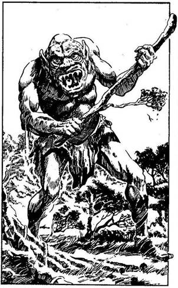
nyúlik. Arra gondolsz, vajon mikor fog ismét kitörni a vulkán, hamutengert és forró lávazuhatagot okádva. Elhessegeted ezeket a gondolatokat, és eldöntöd, merre menj. Ha egyenesen indulsz el a hegyen fölfelé, lapozz a 178-ra. Ha inkább a tűzhányó tövében mész körbe, lapozz a 355-re.
304.
Éles fogak vájnak a nyakadba: a ravasz Borotvafogú őrjöngve támad rád, hogy megöljön. Veszítesz 2 Életerő pontot! Ha még mindig életben vagy, kardoddal megpróbálod levágni magadról a szörnyű teremtményt.
Borotvafogú Ügyesség 6 Életerő 5
Ha legyőzöd, lapozz a 20-ra.
305.
Karddal fát vágni lassú, fáradságos munka. Aggódni kezdesz, hogy a favágás zajára felfigyelhet valaki. Félelmed hamarosan beigazolódik. A hátad mögött két fa között egy Ogre jelenik meg. Álmából verted fel. Felmordul, és egy hatalmas faágat szorongatva elindul feléd.
Ogre Ügyesség 8 Életerő 8
Ha legyőzöd, lapozz a 99-re.
306.
Amint a kőgyűrű fölé nyúlsz, olyan fájdalmat érzel, mintha egy kocsikerék küllői kapták volna be a
kezedet. Visszarántod, de látod, hogy az teljesen deformálódott. Dobj az egyik kockával. Ha 1-5-ig dobsz, lapozz a 277-re. Ha 6-ot dobsz, lapozz a 263-ra.
307.
Elkeseredett igyekezetedben, hogy elmenekülj az Óriásrák elől, nem számolsz a homokkal, amelyen átfutsz. Hirtelen nedves és puha lesz a lábad alatt, ráadásul süppedni kezdesz. Futóhomokra tévedtél, és miközben menekülni próbálsz, egyre mélyebbre süppedsz. Rémülten ordítani kezdesz, mert a homok már a nyakadig ér. Utolsó pillantásoddal Mungót látod, akit épp elnyel az Óriásrák.
308.
Magasba emelt kardoddal rátámadsz a hozzád legközelebb álló ellenfélre. Egy Gyíkemberre.
Gyíkember Ügyesség 8 Életerő 7
Ha legyőzöd, lapozz a 341-re.
309.
Mindkét Gyíkember háttal áll, amikor rájuk támadsz. Az egyiket foglyul tudod ejteni, mielőtt észrevennék a támadást, de a másikkal meg kell küzdened!
Gyíkember Ügyesség 9 Életerő 8
Ha legyőzöd, lapozz a 368-ra.
310.
Nekiesel az egyik korhadt tartógerendának, amely a súlyod alatt eltörik. A mennyezet rád szakad. Majdnem megfulladsz a törmelék alatt, szinte élve vagy eltemetve. Veszítesz 4 Életerő pontot! Ha életben maradsz, sikerül kimásznod a homok és kőtörmelék alól, de vissza kell menned az utolsó elágazásig. Lapozz a 378-ra.
311.
Megittad az Ügyetlenség Italát. Minden további harcod kezdetekor fennáll a veszély, hogy amint kihúzod hüvelyéből kardodat, az kiesik a kezedből, és a földre hullik. Mielőtt belekezdenél az első Fordulóba, dobj az egyik kockával. Ha 1-et dobsz, elejted a kardodat, és automatikusan elveszíted az első Fordulót. Ha ez nem következik be, választhatsz:
Kinyitod a zsákot? Lapozz a 26-ra.
Felpróbálod a csizmát? Lapozz a 94-re.
Felhúzod a gyűrűt az ujjadra? Lapozz a 297-re.
Ha egyikhez sincs kedved, folytathatod utadat nyugat felé, a tisztáson át. Lapozz a 222-re.
312.
A következő ajtó egy kis raktárhelyiségbe nyílik, amely hordókkal és zsákokkal van tele. Ha meg akarod nézni, mit rejt az egyik hordó, lapozz a 231-re. Ha inkább továbbmész a folyosó túloldalán lévő következő ajtóhoz, lapozz a 353-ra.
313.
Vesztedre a csapatot vezető Fejvadász úgy dönt, hogy átkutatja a fa odvát, ahol rejtőzöl. Bedugja a fejét az odú nyílásán, majd vidáman odakiált a többieknek. Csapdába kerültél, és a fejed hamarosan ott fog díszelegni a fejvadászok skalpjai között!
314.
Van lángpallosod? Ha van, lapozz a 296-ra. Ha viszont egy közönséges karddal vívsz meg a Gyíkkirállyal, lapozz a 271-re.

315.
Óvatosan lépkedsz lefelé a létrán, és egyszer csak leérsz a tárna aljába. A tompa fényben új vágatot fedezel fel, ahonnan énekhangok szüremlenek feléd. A vágatban haladva az ének egyre hangosabb tesz, majd közelebb érve kőtörés zaja vegyül bele. Hirtelen lépteket hallasz a hátad mögül. Mit teszel?
Elrejtőzöl a félhomályban? Lapozz a 78-ra.
Szembefordulsz a jövevénnyel, bárki
legyen is az? Lapozz a 347-re.
316.
Maláriás leszel, és magas láz gyötör. Veszítesz újabb 3 Életerő és 1 Ügyesség pontot! Az önkívületben teljesen elveszíted az időérzékedet. Amikor végre meggyógyulsz, fogalmad sincs, meddig voltál beteg. Átkutatod a hátizsákodat, és szomorúan tapasztalod, hogy eltűnt az összes Élelmed. Valószínűleg hangyák vagy bogarak ették meg. Megmosdasz a folyóban, és tutajra szállsz, hogy folytasd utadat. Lapozz a 379-re.
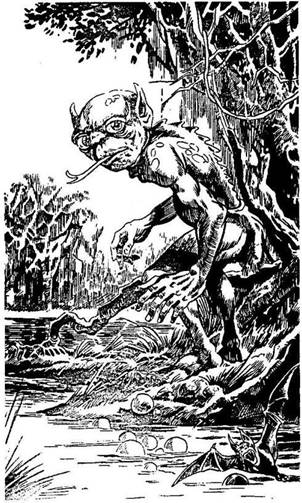
317.
A teremtmény hirtelen megáll, és zavartan néz rád a válla fölött. Széles ajka kinyílik, hosszú, vékony, rózsaszín villás nyelve kipattan, majd ugyanolyan gyorsan vissza is húzódik. Hatalmas szeméből bánat sugárzik, és ekkor rájössz, hogy ez nem más, mint egy ravasz Mocsári Szökdécselő. Szánalmas külsejük ellenére ezek a teremtmények gyakran vonszolják be könnyelmű áldozataikat a mocsári húsevő vadállatok búvóhelyeire, hogy jutalmul néhány apró húscafatot kapjanak. Ennek ellenére nincs olyan teremtmény, amely nálánál jobban közlekedne a veszélyes mocsárvilágban. A Mocsári Szökdécselő int a fejével, hogy kövesd a mocsáron át. Ha követni akarod, lapozz az 58-ra. Ha inkább egyedül mész tovább nyugat felé, lapozz a 158-ra.
318.
Amikor megérinted az öregembert, az a szemed láttára kezd átváltozni. Zöld tüskék bújnak elő a ruháján keresztül, szája pedig borotvaéles fogakkal szegélyezett nyáladzó pofává változik. Nem emberrel van dolgod, hanem egy Alakváltoztatóval, akivel meg kell küzdened.
Alakváltoztató Ügyesség 10 Életerő 10
Ha legyőzöd, lapozz a 372-re.
319.
A Gyíkember megfordul, hogy megnézze, ki van a háta mögött. Észrevesz, amint a földön elnyúlva fekszel. Leteszi a vödrét, és kardjával a kezében rád rohan. Felpattansz, és megmarkolod a kardodat, hogy megvívj vele!
Gyíkember Ügyesség 7 Életerő 7
Ha legyőzöd, lapozz a 23-ra.
320.
Gondosan célzol, és elhajítod a tőrt. Szerencsétlenségedre az épp a narancs fölött száll el. Megbuktál a próbán, és a Sámán most már nem árulja el neked a titkát. Délkelet felé mutat, és közli, hogy a fogolytábor arra van, majd figyelmeztet: a Goncsonggal az ő segítsége nélkül kell megküzdened. Megfordulsz, és elindulsz lefelé a tűzhányó oldalában, hogy megkeresd a Gyíkkirály erődítményét. Lapozz a 168-ra.
321.
A vágat egy elágazásba torkollik. Ha balra akarsz fordulni, lapozz a 19-re. Ha jobbra akarsz menni, lapozz a 39-re.
322.
A Goblin szívós harcos, fegyverként használ mindent, ami a keze ügyébe kerül.
Goblin Ügyesség 5 Életerő 6
Ha legyőzöd, lapozz a 367-re.
323.
A dárda elszáll, de egyikőtöket se találja el. Amilyen gyorsan csak tudsz, berohansz a dzsungelbe a Fejvadászok elől. Átvágod magad a buja bozóton, de közben megfeledkezel az éles ágakról és tüskékről. Végül teljesen kifulladva megállsz, és zihálva nekidőlsz egy fának. A férfi, akit megmentettél, úgy kimerült, hogy nem bír beszélni, de hálásan mosolyog rád. Amikor végre kifújja magát, elmondja, hogy Sama a neve, és a Gyíkkirály aranybányájából szökött meg. Egy tutajt szeretne összeeszkábálni, hogy áthajózhasson a szárazföldre. Elmondod neki, mi járatban vagy. Azt tanácsolja, fordulj vissza, ugyanis a Gyíkkirály állítólag sebezhetetlen. Közlöd vele, hogy nem félsz a Gyíkkirálytól, és elhatároztad, hogy megölöd. Sama azt feleli, hogy kimondhatatlanul hálás neked, amiért megmentetted az életét, mégis képtelen rá, hogy ismét szembetalálkozzék a Gyíkkirállyal. Megnyugtatod, hogy te nem kényszeríted semmi ilyesmire, és küldetésedet egyedül fogod teljesíteni. Mielőtt búcsúzóul kezet fognátok, Sama egy csontamulettet ad át neked, amelyet egy bőrszíjon a nyakában viselt. - Szerencsét hoz majd neked! - mondja kedvesen.
Szerencse pontjaid száma mostantól kezdve sosem csökken 7 alá. Ezt követően Sama eltűnik a dzsungelban, te pedig ismét egyedül folytatod utadat. lapozz a 113-ra.
324.
Közlöd a Sámánnal, hogy nem ellenségesek a szándékaid; segítségért jöttél hozzá. Hűvösen végigmér, és így szól: - Miért nincs tolla hajadban, ha barát vagy? - Ha meg akarod mondani neki,
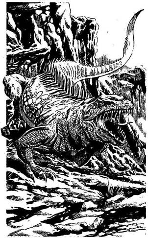
hogy volt tollad, csak elvesztetted, lapozz a 225-re. Ha azt akarod mondani, hogy nem gondoltál rá, hogy még fontos lehet számodra a toll, lapozz a 208-ra.
325.
Lábad alatt szilárdabbá válik a talaj, és a kövek között már nem látod a lábnyomokat. A távolból halk morgást hallasz - lehet, hagy a tűzhányó ébredezik? Lerohansz a szurdokba, ahol hirtelen hatalmas hüllő zárja el az utadat. Kővé dermedten szemléled a páncéltestű hüllőt, amely legalább hat méter hosszú. Óriásgyík áll előtted - zsákmányul akar ejteni. Küzdj meg vele!
Óriásgyík Ügyesség 8 Életerő 9
Ha győzöl, lapozz a 196-ra.
326.
Rámutatsz az első dióhéjra. A Sámán fölemeli, de nincs alatta semmi. Megbuktál a próbán, és a Sámán nem fogja elárulni neked a titkát. Délkelet felé mutatva közli veled, hogy a fogolytábor arra van, és a Goncsonggal az ő segítsége nélkül, egyedül kell megbirkóznod. Sarkon fordulsz, és elindulsz lefelé a tűzhányó oldalában, hogy megkeresd a Gyíkkirály erődítményét. Lapozz a 168-ra.

327.
Az egyik Pigmeus előrelép, és kikapja a kezedből a vasrudat. Megszagolgatja és megnyalogatja, de elégedettségnek nem sok jelét adja. Mutatja, hogy valami mást kér. Mit adsz neki?
Baltát? Lapozz a 206-ra.
Élelmet? Lapozz a 126-ra.
Egyiket sem? Lapozz a 137-re.
328.
Gyorsan kirántod a kardodat, és odaugrasz a Hobgoblinhoz.
Hobgoblin Ügyesség 6 Életerő 6
Ha legyőzöd, lapozz a 338-ra.
329.
Óvatosan előbújsz a fák rejtekéből, és a kunyhóhoz osonsz. Körülnézel, és látod, hogy a Gyíkemberek még mindig beszélgetnek. Kirántod a kardodat, és előrontasz rejtekedből, hogy végrehajtsd a tervedet. Tedd próbára a Szerencsédet! Ha Szerencséd van, lapozz a 309-re. Ha nincs Szerencséd, lapozz a 163-ra.
330.
A majom boldogan ugrik a válladra, és új barátod társaságában ismét útnak indulsz. Lapozz a 350-re.
331.
Bár igen jó harcos vagy, a Fejvadászok túl sokan vannak ahhoz, hogy megbirkózz velük. Négyet ártalmatlanná teszel, amikor egy dárda a hátadba fúródik, és küldetésed véget ért.
332.
A por nemcsak szép, de varázsereje is van. Egy varázslóé volt, akit arra kényszerítettek, hogy a Gyíkkirály rabszolgája legyen, de mielőtt a varázsló lement volna a bányába, elhajította a port tartalmazó üvegcsét, remélve, hogy valaki majdcsak megtalálja. A Barlangi Nő találta meg, de csak annyit tett, hogy a port az üvegből egy kis agyagtálkába öntötte át. A por megvéd minden olyan embertől vagy élőlénytől, aki az akaratodat szeretné irányítani. Nyersz 2 Szerencse pontot! A barlangban nincs egyéb figyelemre méltó dolog, úgyhogy továbbmész. Lapozz a 17-re.
333.
Miközben a mellvértet leemeled a szögről, az nekiütközik a falnak. Tedd próbára a Szerencsédet! Ha szerencséd van, lapozz a 164-re. Ha nincs szerencséd, lapozz a 285-re.
334.
Kinyújtod a karodat, és sikerül elkapnod egy bokrot. Végre megállsz, nem gurulsz tovább. A földön fekve egy üreget veszel észre az egyik szikla tövében, de túl sötét van odabenn, úgyhogy nem látod, mit rejt. Ha be akarsz nyúlni az üregbe, lapozz a 145-re. Ha inkább óvatosan lemész a szurdokba, hogy nyugat felé folytasd az utadat, lapozz a 119-re.
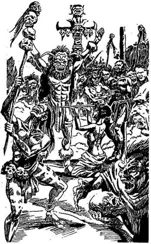
335.
A Sámán átnyújt neked egy tört, és azt mondja, próbáld meg vele eltalálni a narancsot, amit a szikla tetejére tett. Dobj mindkét kockával. Ha a kapott összeg ugyanannyi vagy kevesebb, mint Ügyesség pontjaid száma, lapozz a 93-ra. Ha a kapott összeg magasabb, mint Ügyesség pontjaid száma, lapozz a 320-ra.
336.
Egy nagy szikladarab zuhan a válladra, de szerencsédre nem a kardforgató karod sérül meg. Veszítesz 3 Életerő és 1 Ügyesség pontot! Ha még mindig életben vagy, úgy ép karoddal a fejedet védve, amilyen gyorsan csak tudsz, rohanni kezdesz lefelé a szurdokon. Lapozz a 253-ra.
337.
A tamtam hangja egyre erősödik, ahogy befelé haladsz a sűrű dzsungelban. Énekhangok és mély, dübörgő zaj üti meg a füledet. A lehető leghalkabban lopakodsz előre, amíg egy kis tisztáshoz nem érsz. A tisztás szélén körben bambuszkunyhók állnak. A tisztás közepén tizenkét Fejvadászt látsz, akik egy oszlophoz kikötött félmeztelen férfit vesznek körül. Az egyik Fejvadász, akinek az arcát és a fejét díszes maszk fedi, előrelép és karját a magasba emeli. A tamtamszó hirtelen elhallgat. Ekkor egy nő csontkést nyújt át neki - a Fejvadászok készen állnak, hogy új trófeát szerezzenek maguknak! Túl sokan vannak ahhoz, hogy megtámadd őket, egyedül tehetetlen vagy. Egyféleképpen tudnád elterelni a Fejvadászok figyelmét, de ez veszélyes. Ha az előtted lobogó tábortűzből
kiragadsz egy égő fahusángot, és felgyújtasz vele néhány kunyhót, lapozz a 171-re. Ha inkább visszahúzódsz a dzsungelba és kelet felé mész tovább, lapozz a 113-ra.
338.
Egy bőrzacskó csüng a Hobgoblin övén. Ha ki akarod nyitni, lapozz a 374-re. Ha inkább átrohansz a szakadék túloldalára, lapozz a 139-re.
339.
A Köpködő Varangy ugyanabban a pillanatban veti rád magát, amikor kardoddal előredöfsz. A Varangy súlya a földre lök, de kardod célba talál; markolatig mélyed a Varangy torkába. Haláltusájában vonaglik néhányat, te pedig kimászol kövér hasa alól. Fokozatosan visszanyered a látásodat, és fölkapod a kardodat. Ha továbbra is inni akarsz a tó vizéből, lapozz a 92-re. Ha inkább továbbmész nyugat felé, lapozz a 222-re.
340.
Kirántod a kardodat, és lerohansz a partra, remélve, hogy a kalózok nem vesznek észre. Kettőt sikerül ledöfnöd, mielőtt előránthatnák a késüket, de a másik két kalózzal meg kell vívnod.
Első Kalóz Ügyesség 7 Életerő 7
Második Kalóz Ügyesség 8 Életerő 6
Mindkét Kalóz külön-külön támad rád mindegyik Fordulóban, de te döntöd el, hogy kettőjük közül melyikkel küzdesz meg először. Úgy támadja kiválasztott Kalózra, ahogy egy szokásos csatában tennéd.
Amikor viszont a másikkal csapsz össze, dobnod kell, hogy megtudd, mekkora a Támadóerőd, de még akkor sem sebesíted meg őt, ha a te Támadóerőd a nagyobb; úgy kell tekintened, mintha kivédted volna a támadását. Természetesen ha az ő Támadóereje a nagyobb, megsebzett téged! Ha mindkettővel végzel, lapozz a 61-re.

341.
Körülnézel, hogy megszemléld, hogy áll a harc. Sok harcostársadat lemészárolták, a többiek pedig hátrálnak. Ha nálad van Valhalla kürtje, lapozz a 109-re. Ha nincs, lapozz a 254-re.
342.
A malac igen gyorsan fut, ezért a dárdát azonnal el kell hajítanod. Tedd próbára a Szerencsédet! Ha Szerencséd van, lapozz a 115-re. Ha nincs Szerencséd, lapozz a 219-re.
343.
A lány sírni kezd, és hirtelen bűntudatot érzel, amiért megölted a Tigrisét. Meg akarnád vigasztalni, de a lány gazellagyorsasággal elfut tőled, fel a hegyre. Visszadugod a kardodat a hüvelyébe, és leereszkedsz a völgybe, hogy csatlakozz a kiszabadított foglyokhoz. Lapozz a 279-re.
344.
Ragyogó dobás! A dárda felszáll, és éppen a Hidra egyik nyitott pofájába áll bele, sőt keresztüldöfi. A fej élettelenül bukik előre, de a Hidra még mindig támad az ép fejével.
Hidra Ügyesség 9 Életerő 9
Ha legyőzöd, lapozz a 389-re.
345.
Hátrálva kimászol a törmelék alól. A kő- és szikladarabok között kis fadoboz fekszik. Szétfeszíted a zárat a kardoddal, és boldogan kiáltasz fel, amikor megpillantod, mit rejt. Egy vadászkürt van benne, méghozzá a belevésett írás szerint nem közönséges kürt, hanem Valhalla híres kürtje. Hangjára erő és bátorság tölti el azt, aki belefújt, sőt a barátait is, akik hallják.
Nyersz 2 Szerencse pontot! Nyakadba akasztod a kürtöt, és visszamész az előző elágazáshoz. Ha innen jobbra akarsz elindulni, lapozz a 172-re. Ha egyenesen előre mész tovább, lapozz a 278-ra.
346.
Képtelen vagy ellenállni a Gyíkkirály támadásának. Lángpallosával egyik csapást a másik után méri rád, és nem tudsz mást tenni, csak védekezni. Saját kardoddal semmire sem mész, egy árva karcolást sem tudsz ejteni a Gyíkkirályon. Hátrálnod kell, egyre jobban kifáradsz, így a Gyíkkirály azonnal lesújt. Lángpallosával iszonyatos sebet ejt a karodon, úgyhogy kénytelen vagy eldobni a
kardodat. Felkap, és csapatainak üdvrivalgása közepette kihajít az oromzati lőrésen. Véged van. A Tűz-sziget uralkodója mindörökre a Gyíkkirály marad!
347.
A vágatban egy Gyíkember közeledik feléd, kezében vödörrel. Meglepődik, amikor meglát, és a földre dobja a vödröt. Öblös hangján felordít, majd görbe kardjával rád veti magát.
Gyíkember Ügyesség 7 Életerő 7
Ha legyőzöd, lapozz a 23-ra.
348.
Mialatt alszol, a Vámpír Denevér lecsap rád, hogy a véredből igyék. Nem érzed, amint a fogát belevájja a karodba, és csak akkor veszed észre a fogai nyomát a bőrödön, amikor felébredsz. Veszítesz 2 Életerő pontot! Beleborzongsz sebeid látványába, majd gyorsan összecsomagolsz, és ismét útnak indulsz. Lapozz a 212-re.
349.
Amikor felérsz a magasles tetejére, az öregember eldobja a botját, és följebb mászik a fán. Igen fürge, és te a kardodat meg a hátizsákodat cipelve nem tudod utolérni. Úgy döntesz, hogy otthagyod az öreget, lemászol az indán, és északnyugat felé folytatod az utadat. Lapozz a 375-re.
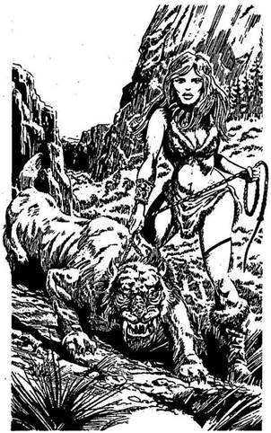
350.
Túljutsz a cserjésen meg egy dombon. Kiérsz egy platóra, ahonnan zöld völgy tárul a szemed elé. A völgy közepén kőerődítmény áll; csíkos zászlaját a szél lobogtatja. Végre megtaláltad a fogolytábort! Éppen le akarsz ereszkedni a völgybe, amikor a hátad mögül morgást hallasz. Egy Kardfogú Tigris az, amelyet egy vadmacskaszemű szőke lány vezet kötélen. Kérdőn tekint rád, közben alig tudja visszafogni a Tigrist. Mit teszel?
Megpróbálsz beszélni vele? Lapozz a 106-ra.
Rátámadsz a Tigrisre a
kardoddal? Lapozz a 190-re.
Lemenekülsz a völgybe? Lapozz a 242-re.
351.
A folyadék az arcodba fröccsen, és csípni kezdi a szemedet. Átmenetileg megvakít a Köpködő Varangy ragacsos, savas nyála. Tisztában vagy azzal, hogy mi történik veled, és kihúzod a kardodat. Tudod, hogy a Köpködő Varangy rád fogja vetni magát, hogy megöljön hegyes fogaival. Vakon a levegőbe suhintasz a kardoddal, és hátralépsz a tó szélétől, miközben szabad kezeddel megdörzsölöd a szemedet. Bár nem látsz, tapasztalod, hogy a Köpködő Varangy rád ugrik. Tedd próbára a Szerencsédet! Ha Szerencséd van, lapozz a 339-re. Ha nincs Szerencséd, lapozz a 73-ra.
352.
A tűzhányó oldalában fény villan; ez akár tükörből vagy fényes fémlemezről visszatükröződő napfény is lehet. Talán a Sámán az, vagy a Gyíkkirály egyik járőre? Azonnal útnak indulsz, hogy kiderítsd. Lapozz a 399-re.
353.
Az ajtó nincs bezárva. Amint benyitsz, egy lócákkal és zsámolyokkal teli szobában találod magad; üvegserlegek, flaskák és poharak sorakoznak a lócákon, a falakon lévő polcokon meg furcsa keverékkel teli korsók állnak. A Gyíkkirály laboratóriumában vagy. Hirtelen léptek zaja üti meg a füledet az ajtó túloldaláról. Ha ki akarod rántania kardodat, hogy azzal fogadd a jövevényt, bárki légyen is az, lapozz a 360-ra. Ha inkább elbújsz valamelyik lóca alá, lapozz a 77-re.

354.
A láda fedele könnyen nyílik. Egy bedugaszolt cserépkancsót találsz benne, meg egy cédulát, melyre ezt írta valaki: "Sok évvel ezelőtt jöttem a Tűz-szigetre, hogy itt nyugalmat találjak. De amióta a Gyíkember betette ide a lábát, nem élhetek itt tovább. Most visszamegyek a szárazföldre. Sok mérgező növény és bokor van a szigeten; egyetlen karcolásuk megölhet. Idd meg a kancsóban lévő
italt, ez védettséget biztosít ellenük. Minden jót kívánok neked. bármi hozott is a szigetre. Isten áldjon. Baskin."
Ha meg akarod innia kancsóban lévő italt, lapozz a 238-ra. Ha inkább ügy döntesz, hogy azonnal elhagyod a házat, lapozz a 152-re.

355.
Menet közben erős kénszagot érzel a levegőben. Hamarosan hatalmas, sűrű sárga iszappal teli tóhoz érsz. Felszínéről kellemetlen cuppogós hangot adó, nagy gázbuborékok törnek elő. A tó iszapja igen meleg lehet; csak úgy forr körülötte a levegő. Egy kövekből és botokból készült furcsa fészekben két óriási tojást fedezel fel, amelyek jól fejlett dinnyéhez hasonlítanak. A héjuk sárga, rücskös. Elképzelni sem tudod, miféle szerzet rakhatta le ide, a kénes tó partjára a tojásait, hogy kikeltse őket. Ha közelebbről akarnád megszemlélni a tojásokat, lapozz a 48-ra. Ha inkább felmászol a tűzhányó tetejére, lapozz a 178-ra.
356.
Az ajtó kinyílik. Lapozz a 395-re.
357.
A kígyómarás végzetes. Tehetetlen vagy a méreggel szemben, és senki sincs melletted, aki segítene rajtad. Kalandod a Tűz-sziget e kopár hegyén véget ér.
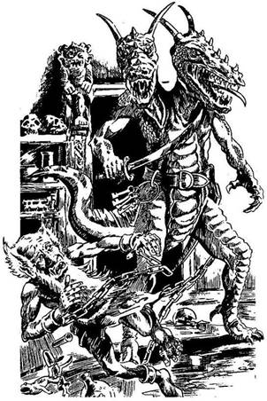
358.
Rámutatsz a középső dióhéjra. A Sámán fölemeli, és megkönnyebbülten látod, hogy egy üveggyöngy fekszik alatta. A próbán megfeleltél! Ha eddig már három próbát kiálltál, lapozz a 214-re. Ha még nem, melyikre vállalkoznál?
Félelem Lapozz a 75-re.
Fájdalom Lapozz a 151-re.
Átváltozás Lapozz a 183-ra.
Erő Lapozz a 220-ra.
Ügyesség Lapozz a 335-re.
359.
Alig teszel meg két lépést, amikor a Pigmeusok szájukhoz emelik fúvócsövüket, és hat nyilat lőnek ki rád. Dobj az egyik kockával, hogy meghatározd, hány nyílvessző fúródott a testedbe, és mindegyikért 1 Életerő pontot vonj le magadtól. Ha még mindig életben vagy, lapozz a 373-ra.
360.
Az ajtó feltárul, és egy mindkét lábán és kezén megbilincselt Törpe nyomul be a laboratóriumba. Egy furcsa kétfejű Gyíkember tartja fogva. Félrelöki a szegény Törpét, és görbe kardját a magasba emelve, támadásra készen feléd lép.
Kétfejű Gyíkember Ügyesség 9 Életerő 9
Ha legyőzöd, lapozz a 173-ra.
361.
Visszaérsz a fúrólyukhoz, ahol a szerencsétlenül járt Törpe még mindig a kézikocsi mellett fekszik. Ha be akarsz mászni a fúrólyukon, lapozz a 298-ra. Ha inkább továbbmész, lapozz a 47-re.
362.
A talaj emelkedni kezd a lábad alatt, végre túljutottál a veszélyes vidéken, a dzsungel és a mocsár már mögötted van. A buja fű és a sok-sok virág gyönyörűvé varázsolja a szigetet, de tudod, hogy nincs időd pihenni. Nemrég értél a szurdokba, mely a hegyek között nyugati irányba húzódik. Ha a szurdokon akarsz végigmenni, lapozz a 40-re. Ha inkább a jobbra emelkedő hegyre kapaszkodsz fel, lapozz a 194-re.
363.
Visszamész a folyóhoz, és felugrasz a tutajodra. Elég lassan haladsz az árral szemben, amikor a folyó szűkülni kezd, a folyása egyre sebesebbé válik. Ha továbbra is a tutajjal akarod folytatni az utadat, lapozz a 228-ra. Ha inkább a szárazföldön mész tovább, lapozz a 376-ra.
364.
Nagyon legyengített a kígyóméreg, mégis életben maradsz. Pihensz, amíg elég erősnek nem érzed magad ahhoz, hogy folytasd az utadat. Ha megpróbálod a kardoddal kipiszkálni a Csörgőkígyót a lyukból, lapozz az 5-re. Ha inkább óvatosan lemész a szurdokba és elindulsz nyugat felé, lapozz a 119-re.
365.
A Sámánnak nyoma sincs, úgyhogy továbbmész a tűzhányó irányában, amerre az ösztönöd visz. Lapozz a 269-re.

366.
Letérdelsz Mungo összezúzott teste mellé, és óvatosan a karodra fekteted a fejét. Résnyire nyitja a szemét. Bár haldoklik, halványan elmosolyodik. Suttogva így szól: - Látod, barátom, az én utam itt véget ér. Nagy hasznomat vetted, mondhatom. Fogadd meg, hagy megölöd a Gyíkkirályt. Ugye megteszed? - Lecsukódik a szeme, és holtan omlik a karjaidba. A parton temeted el egy szikla tövében, és sírját a homokba szúrt kardjával jelölöd, meg. Elszántabban, mint valaha, elindulsz a kőház felé. Lapozz a 198-ra.
367.
Leakasztod a mellvértet, és magadra öltöd. Nyersz 1 Ügyesség, pontot! Elhagyod a Goblin szobáját, és a csigalépcsőhöz mész. Lapozz a 8-ra.
368.
Gyorsan átkutatod a Gyíkemberek tetemét. Egyikük zsebében három vaskulcsot találsz, amit zsebre vágsz. Nem vesztegeted tovább az időt, elindulsz, hogy megkeresd a foglyokat. Lapozz a 147-re.
369.
A szikla túl nehéz, hogy felemeld. Fel kell adnod a küzdelmet! Megbuktál a próbán, a Sámán így nem osztja meg veled a titkát! Délkelet felé mutat, mondván, hogy a fogolytábor arra van, és közli veled, hogy a Goncsonggal az ő segítsége nélkül kell megküzdened. Sarkon fordulsz, és lefelé indulsz a tűzhányó oldalában, hogy megkeresd a Gyíkkirály erődítményét. Lapozz a 168-ra.
370.
Meglendíted a kardodat, és hatalmasat csapsz vele a sziklára. Megrémülsz, amikor látod, hogy a penge kettétörik és csak egy csonka karddarab marad a kezedben. Veszítesz 2 Ügyesség pontot! Ha még nem tetted volna, megérintheted a kristályt - lapozz a 232-re, vagy ha úgy gondolod, hogy elhagyhatod a tisztást és nyugat felé, a dzsungelen át folytathatod az utadat, lapozz a 71-re.
371.
Elhatározod, hogy egy Grannituszt magaddal viszel, hátha még később hasznát veszed. Körbetapogatod a falat, leemelsz róla egy kőállatot, és beledobod a zsákba. Ezután lefelé indulsz a vágaton, de az csakhamar véget ér. Nincs más választásod, mint hogy megfordulj és visszamenj az előző elágazáshoz. Lapozz az 57-re.

372.
Elhagyod a cellát és szörnyű lakóját. Megpróbálod kinyitni a faajtót. Lapozz a 227-re.
373.
A nyílvesszők hegyét a Pigmeusok altató folyadékba mártották, úgyhogy eszméletlenül zuhansz a földre. Amikor felébredsz, a Pigmeusok már sehol sincsenek. Kardod még mindig a kezedben van, de a hátizsákod üres. Az összes Felszerelési Tárgyad és Élelmed eltűnt! Veszítesz 2 Szerencse pontot! A Pigmeusokat átkozva ismét nyugat felé indulsz. Lapozz a 7-re.
374.
A zsákban egy kis agyagbabát találsz. Egy ördögűző készítette, és meg van átkozva. Veszítesz 2 Szerencse pontot! Lehajítod a babát a szurdokba, és átmész a hídon. Lapozz a 139-re.
375.
Miközben utat vágsz magadnak a sűrű bokrok és a buja növények között, zümmögő hangra leszel figyelmes. Színpompás, de ijesztő külsejű Óriás Sárkánylégy lebeg egy helyben a fejed fölött. Sebesen csapkod szivárványszínű szárnyaival. Hirtelen lecsap rád.
Óriás Sárkánylégy Ügyesség 8 Életerő 4
Ha legyőzöd, lapozz a 221-re.
376.
A tutajt odakormányozod a jobb partra, és leugrasz. róla. Erdős domb emelkedik előtted, sziklái és bokrai között csak nehezen lehet felkapaszkodni. Körülnézel, és úgy döntesz, hogy továbbmész északnyugat felé, a tűzhányó irányába, mert úgy gondolod, hogy a Sámán valahol ott rejtőzik. Miközben keresztülvágod magad a buja bozóton, hirtelen egy furcsa bokron akad meg a szemed. Széles, karmazsinvörös végű levelei vannak, és óriás málnához hasonló gyümölcsök csüngenek róla. Ha enni akarsz a gyümölcséből, lapozz a 100-ra. Ha inkább továbbmész, lapozz a 399-re.
377.
A massza kissé büdös, de semmilyen hatással nincs rád. Itt semmi ehető nincs, úgyhogy fogod a kardodat, és ismét útnak indulsz nyugat felé. Lapozz a 113-ra.
378.
Az elágazástól vagy egyenesen mész tovább - lapozz a 68-ra -, vagy balra fordulsz. Lapozz a 4-re.

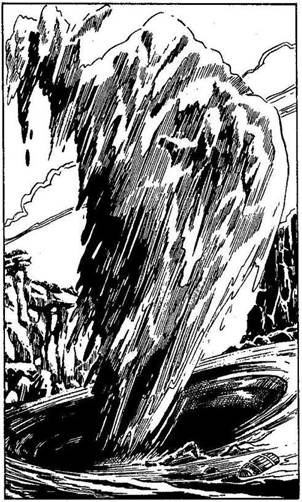
379.
Nem tudni, mitől, a víz kavarogni kezd. Örvény képződik a tutajod orránál, és minden erődet össze kell szedned, nehogy belekerülj. Váratlanul hatalmas vízsugár tör fel az örvényből, és ember alakúvá formálódik. A Víziszörny le akar csapni rád. Ha a birtokodban van a Feneketlen Zsák, lapozz a 181-re. Ha nincs, lapozz a 300-ra.
380.
Úgy tizenöt perc múlva megpróbálod elhagyni biztos rejtekhelyedet. Szerencsédre a Fejvadászok eltűntek. Utat vágsz magadnak a kardoddal, és azonnal elindulsz nyugat felé. Lapozz a 113-ra.

381.
Fél kézzel megkapaszkodsz a fában, és lelököd a Mérgespókot a fa törzséről. Tovább mászol felfelé, és levágsz egy nagy fürt banánt. Lenn a földön megeszed, aztán gyorsan visszaindulsz a rejtekhelyedre. Nyersz 2 Életerő pontot! Bemászol a "sátradba", hogy ott töltsd az éjszakát, s közben az jár az eszedben, vajon milyen meglepetéseket hoz a holnap. Felnézel az égre. Az egyre sötétedő éjszakában rózsaszín és bíborszínű felhők gomolyognak. Az ezernyi rovar fülsiketítő zaját leszámítva élvezed a hűvös éjszakát, és csakhamar elalszol. Tedd próbára a Szerencsédet! Ha Szerencséd van, lapozz a 388-ra. Ha nincs Szerencséd, lapozz a 348-ra.
382.
Jobbra, egy hatalmas szikla oldalában néhány szót látsz bevésve. Ha föl akarsz mászni a sziklához, hogy megnézd, mit véstek bele, lapozz a 35-re. Ha inkább folytatod az utat a szurdokban, lapozz a 119-re!

383.
A vágat igen keskeny. A mennyezetet tartó gerendák megrepedtek és helyenként kilazultak. Klausztrofóbiád egyre nő a félhomályban, de továbbmész, miközben föld és egy csomó apró kő hull a fejedre. Nem veszel észre a földön egy nagy követ, és átesel rajta. Tedd próbára a Szerencsédet! Ha Szerencséd van, lapozz a 140-re. Ha nincs Szerencséd, lapozz a 310-re.

384.
Mielőtt a Goncsong kihúzná a fullánkját a Gyíkkirály fejéből, lekaszabolod a kardoddal. A Gyíkkirályt is és a Goncsongot is megölted. Lapozz a 400-ra.
385.
Kinyújtod a kezedet, leszakítasz egy gombát, kagylókalapja kinyílik, és egy csomó spóra lövell az arcodba. Viszketni kezd tőle a bőröd, és tele lesz kiütéssel. A viszketéstől már a szemedet is alig bírod nyitva tartani. Mit teszel?
Semmit, abban reménykedve, hogy majdcsak
elmúlik? Lapozz a 290-re.
Bedörzsölöd az arcodat a melletted lévő
bokor leveleivel? Lapozza 143-ra.
Megeszed a gombát? Lapozz a 110-re.
386.
A Törpék a segítségedre sietnek, és ártalmatlanná teszitek a Gyíkembert. Ismét felsorakoztatod a Törpéket, és továbbindultok a vágatban. Lapozz a 114-re.
387.
Alig indulsz el a folyón felfelé, máris rájössz, hogy még a tutaj tetején sem vagy biztonságban. Egy szempár bukkan elő a vízből, majd egy éles fogakkal szegélyezett óriási, szélesre tátott állkapocs köteti. Egy Krokodil nagy lendülettel veti rá magát a tutajodra, csaknem ledönt róla. Körülötted csapkod a vízben, elszántan csattogtatja az állkapcsát, hogy bekapjon. Ha van egy vasrudad, lapozz a 9-re. Ha nincs, lapozz a 204-re.
388.
Nyugodtan alszol, majd amikor korán reggel felébredsz, folytatod utadat. Lapozz a 212-re.
389.
Amikor a Hidra alámerül a fekete mocsárba, a Mocsári Szökdécselő elillan, hiszen kiderült galád csele. Hatalmas ugrásokkal tűnik el a szemed elöl. Nincs más választásod, folytatnod kell fárasztó utadat nyugat felé. Alig teszel meg száz métert, amikor észreveszed, hogy jobbra kavarogni kezd a víz. A gonosz Mocsári Szökdécselő a mocsárnak abba a részébe csalt el, amelyben nyüzsögnek a húsevők. Szélsebesen feléd úszik egy Óriás Vízisikló, és ismét meg kell küzdened az életedért.
Óriás Vízisikló Ügyesség 6 Életerő 5
Mindegyik Fordulóban 2 ponttal kell csökkentened a Támadóerődet, mert fáradt vagy és a siklóhoz képest sokkal nehezebben mozogsz. Ha győzöl, lapozz a 49-re.
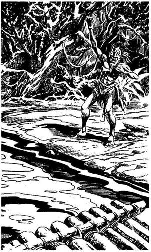
390.
A folyó jobb partján rongyokba öltözött férfit pillantasz meg. Eszeveszetten integetve kiabál neked. Szökött fogolynak nézed. Ha a tutajodat odakormányozod hozzá, lapozz a 87-re. Ha inkább továbbhajózol fölfelé a folyón, lapozz a 14-re.

391.
A fák között buja a bozót: rengeteg a hosszú, széles, tüskés levél, de van itt vadszőlő, mindenféle kúszónövény, gomba, gyökér és százféle nagyságú, fajtájú és színű virág. Mind-mind a fény felé tör, helyet keresve magának a nyirkos rengetegben. A kardoddal kell utat vágnod magadnak, ez pedig lassú, fáradságos munka. Ha le akarsz ülni pihenni egy hatalmas fa tövében, lapozz az 53-ra. Ha inkább folytatod megkezdett utadat nyugat felé, lapozz a 81-re.
392.
Hirtelen átvillan az agyadon az a gondolat, hagy talán a csizma, amit a lábadon viselsz, varázserejű lehet. Talpadat a falhoz nyomod, és megpróbálsz rajta felmenni. Csodák csodájára sikerül! A Mindentmászó Varázscsizma van a lábadon! Nyersz 1 Szerencse pontot! Lemászol a falról, és kissé félénken odalépsz a tárna széléhez. Furcsa érzés merőlegesen lemenni a falon, mint egy légy. A tárna mély, de végül is leérsz az aljára. Lent koromsötét van. Végigtapogatod a falat, de nem találsz semmilyen vágatot, ami kivezetne belőle. Már éppen visszaindulnál a tárna oldalfalán, amikor belebotlasz valamibe. Lehajolsz, és egy kard élét tapintod ki. Visszamész a vágatba, ahol megvizsgálod legújabb szerzeményedet. A fáklyák sárga fénye gyönyörűen megmunkált kardot világít meg. Nyersz 2 Ügyesség pontot! Ledobod a tárnába a régi kardodat, és visszatérsz az elágazáshoz. Lapozz a 135-re.
393.
A kis drótdarab segítségével gyorsan leveszed a Törpe bilincsét. Nyersz 1 Szerencse pontot! Közlöd a Törpével, hogy te vezeted a fogolytábor felszabadító harcát, és megkérdezed tőle, hol rejtőzik a Gyíkkirály. Elmondja, hogy a Gyíkkirály az erőd oromzati lőrésénél áll, onnan buzdítja harcra a csapatát. Megmondod a Törpének, hogy vegye el a mutáns alakváltoztató, görbe kardját, és megkéred, segítsen fogva tartott társainak. Szerencsét kívánsz neki, aztán kirohansz az ajtón. Lapozz a 180-ra.
394.
Mielőtt az Iszapszívó túl közel kerülne hozzád, feléhajítod a dárdádat. Dobj az egyik kockával. Ha a kapott szám 1 vagy 2 - lapozz a 191-re. Ha a kapott szám 3, 4, 5 vagy 6 - lapozz a 202-re.

395.
Mocskos kínzókamrában találod magad. Telis-tele van iszonyú kínzóeszközökkel; kínpadokkal, hüvelykszorítókkal, vasszögekkel és korbácsokkal. Egy rozsdás kést is észreveszel a kamra sarkában álló asztalon. Mit teszel?
Felkapsz egy korbácsot? Lapozza 136-ra.
Felkapod a rozsdás kést? Lapozz a 275-re.
Nem nyúlsz hozzá semmihez, inkább a
legtávolabbi ajtóhoz mész? Lapozz a 312-re.
396.
A Köpködő Varangy foga fájdalmasan belemélyed kardforgató karodba. Veszítesz 2 Életerő és 2 Ügyesség pontot. A másik kezedbe veszed a kardot; sikerül kifeszítened a Köpködő Varangy száját. Kimászol hatalmas hasa alól, és vaktában belédöfsz.
Köpködő Varangy Ügyesség 5 Életerő 6
Vakságod miatt minden egyes Fordulóban 3-mal kell csökkentened a Támadóerődet. Ha te győzöl, lapozz a 134-re.
397.
A Sámán közli veled, hogy három próbának kell megfelelned a hat közül. Megkérdezi, melyiket választod elsőnek.
A Szerencse Lapozz a 2-re.
a Félelem Lapozz a 75-re.
a Fájdalom Lapozz a 151-re.
az Átalakulás Lapozz a 183-ra.
az Erő Lapozz a 220-ra.
az Ügyesség próbáját? Lapozz a 335-re.
398.
Kinyitod a ládát, és meglepetten látod, hogy vasrudak vannak benne! A kapitány valószínűleg becsapta a legénységet, amikor elhitette velük, hogy kincset ásnak el. Az igazi kincs biztosan még mindig a hajó fedélzetén van, bár nem sok hasznát veheti már. Úgy döntesz, hogy egy vasrudat elteszel a hátizsákodba. A kis ösvényen felkapaszkodsz a sziklára. Lapozz a 200-ra.
399.
A fa ágáról kitömött zsák lóg le egy kötélen. Ha le akarod vágni a zsákot, lapozz a 282-re. Ha inkább továbbmész, lapozz a 27-re.

400.
Áthajítod a hitvány Goncsong tetemét az oromzati párkányon, majd felállsz a párkányra, ahonnan embereid jól láthatnak. Lentről üdvrivalgás hallatszik. Elégedetten szemléled, milyen könnyen győzik le embereid a Gyíkkirály demoralizált seregét. A csatának vége, te győztél! Az Elfek, a Törpék és az emberek valamennyien visszatérhetnek a szárazföldön lévő otthonukba. A Tűz-sziget rabszolgabányái örökre megszűnnek. Mungo biztosan büszke lenne rád, ha élne!